<!doctype html>
<html lang="en">
<head>
  <meta charset="utf-8">
  <meta name="viewport" content="width=device-width, initial-scale=1">
  <title>arxiv digest — 2026-07-29</title>
  <style>
:root {
  --bg: #ffffff;
  --fg: #1f2328;
  --muted: #59636e;
  --border: #d0d7de;
  --card: #f6f8fa;
  --link: #0969da;
}
body {
  max-width: 980px;
  margin: 0 auto;
  padding: 2rem 1rem 5rem;
  font-family: -apple-system, BlinkMacSystemFont, "Segoe UI", Helvetica, Arial, sans-serif;
  line-height: 1.55;
  color: var(--fg);
  background: var(--bg);
}
a { color: var(--link); }
img { max-width: 100%; height: auto; }
pre, code { background: var(--card); border-radius: 6px; }
pre { padding: 1rem; overflow-x: auto; }
blockquote { border-left: 4px solid var(--border); padding-left: 1rem; color: var(--muted); }
details { margin: 0.6rem 0; }
summary { cursor: pointer; font-weight: 600; }
.paper-figures-scroll {
  display: flex;
  gap: 1rem;
  overflow-x: auto;
  overscroll-behavior-x: contain;
  padding: 0.75rem 0.25rem 1rem;
  margin: 1rem 0 1.25rem;
  border-top: 1px solid var(--border);
  border-bottom: 1px solid var(--border);
  scroll-snap-type: x proximity;
}
.paper-figure-card {
  flex: 0 0 min(260px, 72vw);
  scroll-snap-align: start;
  background: var(--card);
  border: 1px solid var(--border);
  border-radius: 12px;
  padding: 0.55rem;
}
.paper-figure-card img {
  display: block;
  width: 100%;
  max-height: 240px;
  object-fit: contain;
  background: white;
  border-radius: 8px;
}
.paper-figure-caption {
  display: block;
  margin-top: 0.5rem;
  color: var(--muted);
  font-size: 0.85rem;
}
.figure-strip-hint {
  color: var(--muted);
  font-size: 0.9rem;
  margin-bottom: -0.3rem;
}
</style>
  <!-- MathJax: renders $...$ inline math and $$...$$ display math, plus
       \(...\) and \[...\]. Loaded from the official CDN; works offline
       once cached. Configured to skip code/pre blocks so arxiv IDs that
       look like dollar amounts don't get mangled. -->
  <script>
    window.MathJax = {
      tex: {
        inlineMath: [['$', '$'], ['\\(', '\\)']],
        displayMath: [['$$', '$$'], ['\\[', '\\]']],
        processEscapes: true,
        processEnvironments: true
      },
      options: {
        skipHtmlTags: ['script', 'noscript', 'style', 'textarea', 'pre', 'code'],
        ignoreHtmlClass: 'tex2jax_ignore',
        processHtmlClass: 'tex2jax_process'
      }
    };
  </script>
  <script id="MathJax-script" async
    src="https://cdn.jsdelivr.net/npm/mathjax@3/es5/tex-chtml.js"></script>
</head>
<body>
<header style="background-color: #333; color: white; padding: 15px; margin-bottom: 20px;">
  <h1 style="margin: 0; font-size: 24px;">
    <a href="https://ochelpan.github.io/arXiv_clean/" style="color: white; text-decoration: none;">Main</a>
  </h1>
</header>

<h1>Daily arXiv Report</h1>

<hr>
<p>
<a href="index.html">← Index</a>
 · <a href="papers_07.html">← Previous</a> · <a href="papers_09.html">Next →</a>
</p>
<hr>

<h2>Papers 141–160</h2>
<p><a id="paper-2607.23985"></a></p>
<h3 id="symmetry-criterion-for-van-hove-criticality-at-non-time-reversal-invariant-momenta"><a href="http://arxiv.org/abs/2607.23985v1">Symmetry Criterion for Van Hove Criticality at Non-Time-Reversal-Invariant Momenta</a></h3>
<p><strong>Authors:</strong> Min-Quan Kuang, Hua-Yu Li<br>
<strong>Type:</strong> theory · <strong>Category:</strong> strongly correlated electrons · <strong>PDF:</strong> <a href="https://arxiv.org/pdf/2607.23985v1">https://arxiv.org/pdf/2607.23985v1</a><br>
<strong>Analysis basis:</strong> full PDF text, analyzed in chunks
<strong>Topic relevance:</strong> <code>Keldysh / 2PI / non-Gaussian methods</code> <strong>1/5</strong> · <code>analog quantum simulation</code> <strong>1/5</strong> · <code>driven-dissipative phase transition</code> <strong>1/5</strong></p>
<div class="figure-strip-hint">↔ Scroll figures horizontally</div>
<div class="paper-figures-scroll">
<figure class="paper-figure-card">
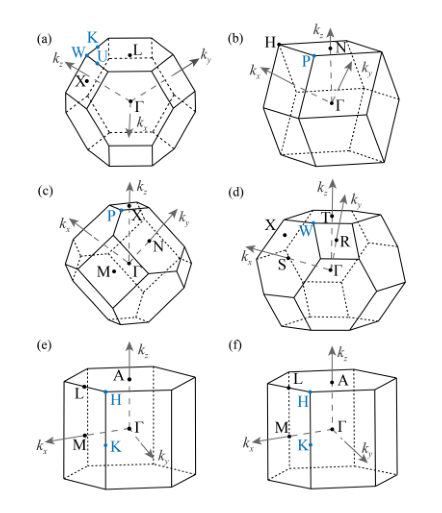
<figcaption class="paper-figure-caption"><b>Fig 1.</b> FIG. 1. Brillouin zones for the six crystal systems classified in Table II. The TRIMs and non-TRIMs are marked by black and blue dots, respectively. Panels: (a) face-centered cubic (FCC) lattice with TRIMs Γ, X, L and non-TRIMs W, K, U; (b) body-centered cubic (BCC) lattice with TRIMs Γ, H, N and non-TRIM P; (c) body-centered tetragonal (BCT) lattice with TRIMs Γ, M, X, N and non-TRIM P; (d) body-centered orthorhombic (BCO) lattice with TRIMs Γ, X, S, R, T and non-TRIM W; (e) hexagonal (Hex) lattice with TRIMs Γ, A, M, L and non-TRIMs K, H; and (f) trigonal (Trig) lattice in the hexagonal setting with TRIMs Γ, A, M, L and non- TRIMs K, H.</figcaption>
</figure>
<figure class="paper-figure-card">
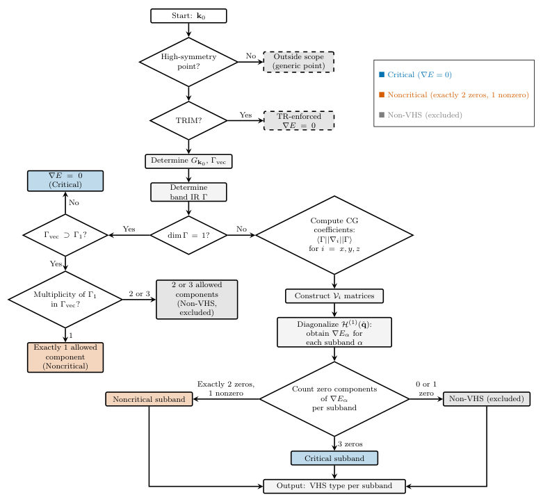
<figcaption class="paper-figure-caption"><b>Fig 2.</b> FIG. 2. Flowchart for classifying VHS types at non-TRIM high-symmetry points. For nondegenerate bands (dim Γ = 1), the criterion proceeds in two steps: (i) check whether Γvec contains the trivial representation Γ1; if not, all 1D bands are critical; (ii) if yes, count the multiplicity of Γ1 in Γvec: multiplicity 1 ⇒noncritical, multiplicity 2 or 3 ⇒Non-VHS (excluded). For degenerate bands (dim Γ &gt; 1), each subband is classified independently by counting the zero components of ∇Eα: 3 zeros ⇒ critical; exactly 2 zeros and 1 nonzero ⇒noncritical; otherwise (0 or 1 zero) ⇒Non-VHS (excluded). Dashed boxes indicate cases outside the scope of this work (generic points and TRIMs).</figcaption>
</figure>
<figure class="paper-figure-card">
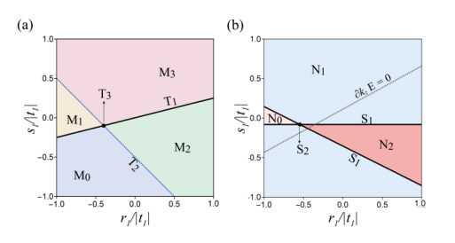
<figcaption class="paper-figure-caption"><b>Fig 3.</b> FIG. 3. Tight-binding phase diagrams for the s-orbital model in the single-group limit (excluding spin-orbit coupling). (a) Phase diagram at the W point (A1 representation), show- ing exclusively critical phases (M0–M3, T1–T3) as enforced by symmetry (Γvec ̸⊃A1). The higher-order phase T1 corre- sponds to the solid black line, while T2 is denoted by the dot- ted blue line. (b) Phase diagram at the K point, dominated by noncritical phases (N0–N2, S1, S2). The higher-order non- critical phase S1 is explicitly marked by the solid black lines. True criticality emerges only accidentally along the gray dot- ted line (∂kzE = 0) via specific parameter tuning. In both panels, the shaded background...</figcaption>
</figure>
</div>

<p><strong>Summary.</strong> This paper develops a powerful group-theoretical framework to predict when Van Hove Singularities (VHSs) are guaranteed to occur at non-time-reversal-invariant momenta in electronic band structures. By analyzing the little group symmetry, it provides a parameter-independent criterion that dictates whether the band gradient must vanish due to fundamental symmetries of the crystal lattice.</p>
<p><strong>Why it may be interesting.</strong> While focused on solid-state band structure, the rigorous application of representation theory to determine fundamental physical constraints ($
abla E=0$) is highly relevant to understanding symmetry protection in quantum materials, which underpins many advanced topics in AMO physics and topological systems.</p>
<details>
<summary>Detailed structure</summary>
<p><strong>Main problem.</strong> The paper establishes a systematic, symmetry-based criterion to determine whether the band gradient ($
abla E$) vanishes at non-time-reversal-invariant momenta (non-TRIMs) in electronic band structures.</p>
<p><strong>Main result.</strong> The vanishing of $
abla E$ is dictated by the representation theory of the little group ($G_{\mathbf{k}_0}$); specifically, for nondegenerate bands, criticality is forced if and only if the vector representation ($\Gamma_{	ext{vec}}$) does not contain the trivial representation ($\Gamma_1$).</p>
<p><strong>Method.</strong> The analysis uses group theory (representation theory of the little group) applied to the band dispersion $E(\mathbf{k})$ near high-symmetry points, utilizing Wigner-Eckart theorem and Clebsch–Gordan coefficients for classification.</p>
<p><strong>Model / system.</strong> The study analyzes single-particle electronic band dispersions in three dimensions, modeled using a tight-binding framework applied to specific space groups (e.g., 225) under the single-group limit (no SOC).</p>
<p><strong>Key observables.</strong> Vanishing or non-vanishing of the band gradient ($
abla E$), which determines if Van Hove Singularities (VHSs) are symmetry-enforced critical points.</p>
<p><strong>Important parameters / regimes.</strong> The crystal space group, the specific high-symmetry momentum $\mathbf{k}_0$, and the structure of the little group's vector representation ($\Gamma_{	ext{vec}}$).</p>
<p><strong>Assumptions / limitations.</strong> The analysis is strictly limited to single-particle band theory in weakly correlated, paramagnetic systems within the single-group (no SOC) limit.</p>
<p><strong>Figures summary.</strong> Figures illustrate Brillouin zones marking TRIMs and non-TRIMs; tables summarize criticality ($
abla E=0?$) based on group symmetry for various points and bands.</p>
<p><strong>Paper structure.</strong> The paper develops a general criterion using little group theory, applies it systematically to specific space groups (like 225) to classify VHS types at non-TRIMs, and concludes by providing a parameter-independent framework for engineering these singularities.</p>
</details>
<details>
<summary>Abstract</summary>
<p>At non-time-reversal-invariant momenta (non-TRIMs), time-reversal symmetry does not constrain the linear term of the band dispersion. Whether $\nabla E$ vanishes is therefore determined entirely by the representation theory of the little group. For nondegenerate bands, $\nabla E$ is forced to zero if and only if the vector representation $Γ_{\mathrm{vec}}$ of the little group does not contain the trivial representation $Γ_1$. When $Γ_{\mathrm{vec}}$ does contain $Γ_1$, $\nabla E$ is not forced to vanish for any nondegenerate band; the classification instead depends on the multiplicity of $Γ_1$ in $Γ_{\mathrm{vec}}$. For degenerate bands, the Wigner-Eckart theorem and Clebsch--Gordan coefficients determine whether linear couplings vanish, with classification performed at the subband level. Applied to space group 225, the criterion explains why the $W$ point is critical for all nondegenerate bands, the degenerate $E$ bands are generically noncritical, and the $K$ and $U$ points host parameter-dependent criticality. Supporting phase diagrams reveal a two-tier hierarchy: symmetry enforces $\nabla E=0$, while band parameters determine higher-order character. We extend this classification to all space groups hosting non-TRIMs in the single-group limit, providing a symmetry-dictated, parameter-independent framework for engineering Van Hove singularities in three-dimensional quantum materials.</p>
</details>
<p><sub><a href="#top">↑ back to top</a></sub></p>

<p><a id="paper-2607.24534"></a></p>
<h3 id="amortized-posteriors-for-estimation-of-material-constitutive-parameters-from-multimodal-measurements-on-small-punch-tests"><a href="http://arxiv.org/abs/2607.24534v1">Amortized Posteriors for Estimation of Material Constitutive Parameters from Multimodal Measurements on Small Punch Tests</a></h3>
<p><strong>Authors:</strong> Mohammad Ali Seyed Mahmoud, Aditya Venkatraman, Raj Mahat, Samantha Mitra, Surya R. Kalidindi<br>
<strong>Type:</strong> both · <strong>Category:</strong> statistical mechanics · <strong>PDF:</strong> <a href="https://arxiv.org/pdf/2607.24534v1">https://arxiv.org/pdf/2607.24534v1</a><br>
<strong>Analysis basis:</strong> full PDF text, analyzed in chunks
<strong>Topic relevance:</strong> <code>methods for driven-dissipative</code> <strong>1/5</strong> · <code>quantum measurements</code> <strong>1/5</strong></p>
<div class="figure-strip-hint">↔ Scroll figures horizontally</div>
<div class="paper-figures-scroll">
<figure class="paper-figure-card">
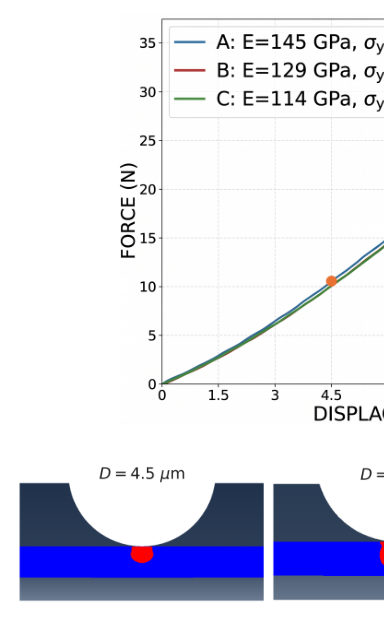
<figcaption class="paper-figure-caption"><b>Fig 1.</b> Figure 1: Parameter coupling in the early SPT response. (a) Simulated early force–displacement responses for three combinations of Young’s modulus E and yield strength σy; markers denote punch displacements D = 4.5, 9, and 12 µm on curve A, and the inset shows the FE model of the SPT configuration. (b) Regions satisfying the von Mises yield condition (red) beneath the punch at the three marked displacements.</figcaption>
</figure>
<figure class="paper-figure-card">
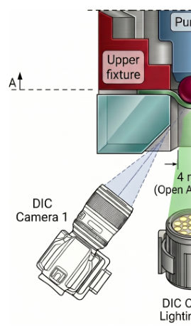
<figcaption class="paper-figure-caption"><b>Fig 2.</b> Figure 2: Experimental setup: small punch test fixture with the direct-view stereoscopic DIC system. The punch and die assembly, clamped specimen, two cameras with 100 mm lenses, and LED illumination directed at the speckled bottom surface through the die opening are shown.</figcaption>
</figure>
<figure class="paper-figure-card">
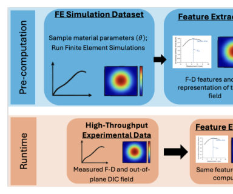
<figcaption class="paper-figure-caption"><b>Fig 3.</b> Figure 3: Overview of the two-stage inference workflow. Top (pre-computation): finite element simulations are con- verted into compact features that are used to train a surrogate model and a posterior estimator. Bottom (runtime): the experimental F–D and DIC measurements are processed using the same feature representation and supplied to the trained CFM model to generate posterior samples of the material parameters.</figcaption>
</figure>
<figure class="paper-figure-card">
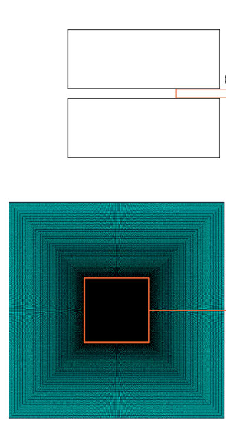
<figcaption class="paper-figure-caption"><b>Fig 4.</b> Figure 4: Finite element model of the SPT specimen: (a) Boundary conditions. The punch reference point (RP) is loaded in displacement control (downward arrow). The upper die RP is held fixed after the clamping step. The lower die RP is fully fixed. The specimen (orange) sits between the dies. (b) FE mesh: full 10 × 10 mm domain (left) and zoom into the 3 × 3 mm DIC region of interest (right). The structured C3D8 mesh is locally refined toward the punch-contact region; within the region of interest the bottom-surface element faces form a regular rectangular grid.</figcaption>
</figure>
<figure class="paper-figure-card">
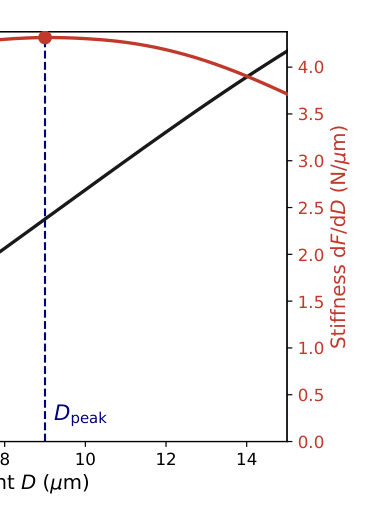
<figcaption class="paper-figure-caption"><b>Fig 5.</b> Figure 5: Truncation of the F–D curve for the estimation of E and σy. The force F (black, left axis) and the stiffness dF/dD (red, right axis) are plotted against punch displacement. The displacement Dpeak corresponding to the maximum in the dF/dD was used to truncate the F–D curves for the analyses in this study.</figcaption>
</figure>
</div>

<p><strong>Summary.</strong> This paper introduces a novel, scalable framework using Gaussian Processes and Conditional Flow Matching to estimate material properties from combined mechanical test data (Force vs. Displacement and DIC fields). By learning conditional posteriors directly, it overcomes the mathematical difficulties of defining joint likelihoods across different measurement types, providing robust parameter inference for complex materials testing like Small Punch Tests.</p>
<p><strong>Why it may be interesting.</strong> While focused on classical materials science, the core methodology—using advanced generative ML models (Flow Matching) for likelihood-free inference from complex, multi-source experimental data—is highly relevant for analyzing noisy measurements in quantum experiments (e.g., characterizing decoherence rates or interaction strengths).</p>
<details>
<summary>Detailed structure</summary>
<p><strong>Main problem.</strong> The primary challenge is performing Bayesian calibration of material constitutive parameters from multimodal mechanical test data when specifying a joint likelihood across different measurement types is difficult.</p>
<p><strong>Main result.</strong> The proposed framework successfully uses DIC measurements to contract broad posteriors derived from force-displacement curves alone, leading to accurate estimation of Young's modulus and yield strength.</p>
<p><strong>Method.</strong> A novel amortized, likelihood-free framework combining Gaussian Process (GP) surrogates with Conditional Flow Matching (CFM) is used to learn conditional posteriors directly from synthetic data.</p>
<p><strong>Model / system.</strong> The study uses the Small Punch Test (SPT) on aluminum alloys, modeling the material response using an elastic–perfectly plastic (EPP) constitutive model. Measurements include global force-displacement curves and spatially resolved displacement fields from Digital Image Correlation (DIC).</p>
<p><strong>Key observables.</strong> Young's modulus ($E$), yield strength ($\sigma_y$), Force–Displacement ($F–D$) curve, and out-of-plane displacement field $w(x, y)$.</p>
<p><strong>Important parameters / regimes.</strong> Constitutive parameters ($E$, $\sigma_y$); reference values from independent tensile tests.</p>
<p><strong>Assumptions / limitations.</strong> The framework assumes that conditional posteriors can be learned robustly without explicitly constructing a joint likelihood function across modalities.</p>
<p><strong>Figures summary.</strong> Figures illustrate the experimental setup (DIC), show parameter coupling in $F–D$ data alone, and demonstrate how adding DIC displacement fields contracts the posterior distributions towards known reference values.</p>
<p><strong>Paper structure.</strong> The paper introduces the problem of multimodal Bayesian inference for material parameters. It proposes the GP-CFM framework trained on synthetic data. The utility is demonstrated by applying this to SPT/DIC data, showing improved parameter estimation over using force data alone.</p>
</details>
<details>
<summary>Abstract</summary>
<p>Bayesian calibration of material constitutive parameters from multimodal mechanical test data is often limited by the need to specify a joint likelihood across measurement modalities that differ in dimensionality, noise structure, and physical units. The resulting posteriors are often broad or strongly correlated, causing standard Markov Chain Monte Carlo (MCMC) samplers to mix poorly. Here, we present an amortized, likelihood-free framework that combines Gaussian process (GP) surrogates with Conditional Flow Matching (CFM) to learn conditional posteriors over constitutive parameters directly from synthetic multimodal parameter--observation pairs, avoiding hand-crafted likelihoods and repeated MCMC sampling. Once trained, the GP--CFM model generates posterior samples for each new specimen at negligible cost. The utility of this novel approach is demonstrated in this paper by estimating the values of Young's modulus and yield strength from the early portion of the force--displacement ($F$--$D$) curve and a Digital Image Correlation (DIC)-based displacement field measured in a Small Punch Test (SPT). It is observed that the $F$--$D$ data alone produce broad posteriors, consistent with limited parameter discrimination in the global response. Adding the DIC-measured displacement field was seen to contract the posteriors and shift them towards the independently measured tensile reference values. This work establishes a robust likelihood-free framework for the inference of material constitutive parameters from multimodal data, demonstrated through SPT--DIC integration.</p>
</details>
<p><sub><a href="#top">↑ back to top</a></sub></p>

<p><a id="paper-2607.24714"></a></p>
<h3 id="efficient-llm-generated-shuttling-compilers-for-complex-trapped-ion-architectures"><a href="http://arxiv.org/abs/2607.24714v1">Efficient LLM-Generated Shuttling Compilers for Complex Trapped-Ion Architectures</a></h3>
<p><strong>Authors:</strong> Fabian Kreppel, Reza Salkhordeh, Ferdinand Schmidt-Kaler, André Brinkmann<br>
<strong>Type:</strong> both · <strong>Category:</strong> other · <strong>PDF:</strong> <a href="https://arxiv.org/pdf/2607.24714v1">https://arxiv.org/pdf/2607.24714v1</a><br>
<strong>Analysis basis:</strong> full PDF text, analyzed in chunks
<strong>Topic relevance:</strong> <code>QC/QI experiment</code> <strong>1/5</strong> · <code>methods for driven-dissipative</code> <strong>1/5</strong></p>
<div class="figure-strip-hint">↔ Scroll figures horizontally</div>
<div class="paper-figures-scroll">
<figure class="paper-figure-card">
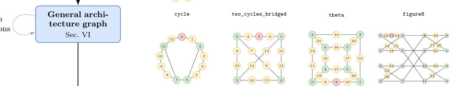
<figcaption class="paper-figure-caption"><b>Fig 1.</b> Fig. 1. Overview of the approach. The three shuttling compilers are generated in a chained sequence of increasing architectural generality: from top to bottom, a linear architecture (Sec. IV), a branched architecture with junctions and stacks (Sec. V), and a general architecture (Sec. VI). Each subsequent compiler is seeded with the previous one’s optimized code together with a written specification of what must change, while the linear-architecture compiler starts from scratch. Each emitted compiler is then refined through follow-up optimization prompts that target timesteps, compile time, and memory use. Beside each stage, we draw the corresponding architecture, in which qubit segments...</figcaption>
</figure>
<figure class="paper-figure-card">
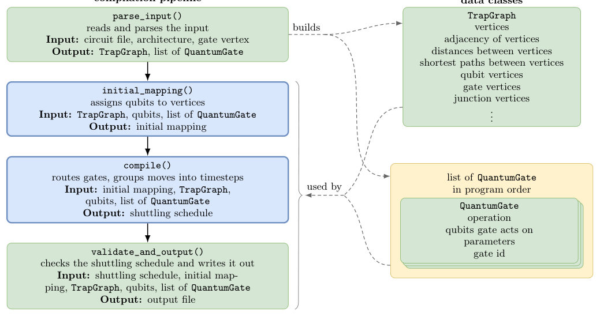
<figcaption class="paper-figure-caption"><b>Fig 2.</b> Fig. 2. Structure of the single-file compiler ion_trap_compiler.py. Boxes in green are the provided, fixed components that the LLM may not change: the outer functions parse_input and validate_and_output and the data classes TrapGraph and QuantumGate. Boxes in blue are the two functions written by the LLM: initial_mapping and compile. The shaded frame groups the QuantumGate objects into the list the pipeline passes along. Solid arrows follow the compilation pipeline, and dashed lines show which data-class objects each function builds or uses. Of TrapGraph’s query methods, the figure shows only those shared by all three compilers.</figcaption>
</figure>
<figure class="paper-figure-card">
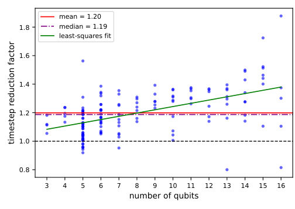
<figcaption class="paper-figure-caption"><b>Fig 3.</b> Fig. 4. Linear architecture, optimized LLM-based compiler versus the hand-crafted baseline11 on the 153 library circuits. Each circuit’s reduction factor is plotted against its qubit count. The dashed line marks factor 1, and the red, pur- ple, and green lines mark the mean, the median, and a least- squares fit.</figcaption>
</figure>
<figure class="paper-figure-card">
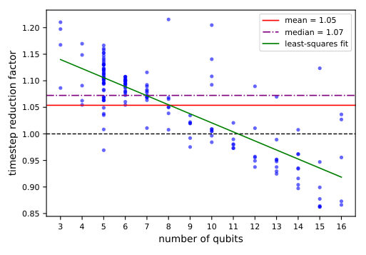
<figcaption class="paper-figure-caption"><b>Fig 4.</b> Fig. 5. Branched architecture, optimized LLM-based com- piler versus the hand-crafted baseline16 on the circuit library at stack height 1 and junction distance 1. Each circuit’s re- duction factor is plotted against its qubit count. The dashed line marks factor 1, and the red, purple, and green lines mark the mean, the median, and a least-squares fit.</figcaption>
</figure>
<figure class="paper-figure-card">
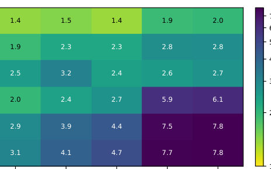
<figcaption class="paper-figure-caption"><b>Fig 5.</b> figure8</figcaption>
</figure>
</div>

<p><strong>Summary.</strong> This paper demonstrates that frontier Large Language Models can autonomously generate highly efficient shuttling compilers for complex trapped-ion quantum architectures. By treating the trap as a graph, the LLMs minimize the required ion movement time steps compared to existing methods. This capability significantly accelerates the development cycle for new quantum hardware designs.</p>
<p><strong>Why it may be interesting.</strong> This work directly addresses the crucial engineering bottleneck in trapped-ion quantum computing—the translation layer between abstract circuits and physical hardware movements—using advanced AI tools.</p>
<details>
<summary>Detailed structure</summary>
<p><strong>Main problem.</strong> The core problem is developing efficient software compilers that translate abstract quantum algorithms into physical sequences of ion-qubit movements (shuttling) required by trapped-ion hardware.</p>
<p><strong>Main result.</strong> Frontier LLMs can generate working, competitive shuttling compilers for complex architectures without manual algorithmic engineering, drastically reducing development time from months to days.</p>
<p><strong>Method.</strong> The authors used state-of-the-art LLMs (Claude Opus 4.7 and Fable 5) to iteratively generate and refine Python code that maps quantum circuits onto physical trap graphs representing ion connectivity.</p>
<p><strong>Model / system.</strong> The system is a trapped-ion quantum computer, modeled as a graph where vertices are trap segments and edges represent shuttling paths. The compiler must schedule sequential movements of ions (qubits) across this graph structure.</p>
<p><strong>Key observables.</strong> The primary observable is the number of shuttling timesteps required to execute a circuit; reductions up to 76% were reported compared to hand-crafted methods.</p>
<p><strong>Important parameters / regimes.</strong> Architectural complexity, measured by connectivity (linear vs. junction-rich graphs), and qubit count (up to 50 qubits tested).</p>
<p><strong>Assumptions / limitations.</strong> Shuttling operations are assumed to be executed sequentially; the current focus deliberately excludes scheduling simultaneous gates across multiple segments.</p>
<p><strong>Figures summary.</strong> Figure 1 illustrates the systematic, chained generation process from simple linear traps to complex general graph architectures. Figure 2 shows the structure of the resulting compiler code, highlighting LLM-written functions within a fixed framework.</p>
<p><strong>Paper structure.</strong> The paper systematically develops the compiler by testing increasing architectural complexity: first on linear segments, then on junctions, and finally on broad classes of connected trap graphs using comprehensive test suites (T1-T14).</p>
</details>
<details>
<summary>Abstract</summary>
<p>Trapped-ion quantum computers rely on shuttling compilers, which cast an input algorithm into a sequence of ion-qubit movements within a given architecture. We present the first study in which a single frontier large language model (LLM), Claude Opus 4.7, generates and iteratively refines the full Python code of shuttling compilers from written specifications. We start with a compiler for (i) a linear segmented trap, extend it to (ii) a trap with junctions, and finally achieve efficient compilation for (iii) a broad class of connected trap graphs. The compilers for the more general cases are seeded with code from the previous ones. We benchmark the LLM-generated compilers against state-of-the-art hand-crafted ones using a common suite of quantum circuits. The number of shuttling timesteps is reduced by up to 76% for (i) and up to 39% for (ii). For the broad case (iii) of freely connected architectures, we find large variations in the required number of shuttling timesteps, depending on the connectivity. A densely connected, junction-rich architecture yields an order-of-magnitude reduction in shuttling timesteps compared to a corridor-like one. Repeating the complete generation and evaluation with a second frontier LLM, Claude Fable 5, reproduces these findings, with the Fable 5 compilers surpassing the hand-crafted ones more often on the largest circuits. Our results show that an unmodified frontier LLM can produce working, correct, and competitive shuttling compilers without additional manual algorithmic engineering, thus reducing the development time for new architectures from several months to a few days.</p>
</details>
<p><sub><a href="#top">↑ back to top</a></sub></p>

<p><a id="paper-2607.23996"></a></p>
<h3 id="recoverable-quantum-computation-an-information-centric-paradigm-for-quantum-computing-with-errors"><a href="http://arxiv.org/abs/2607.23996v1">Recoverable Quantum Computation: An Information-Centric Paradigm for Quantum Computing with Errors</a></h3>
<p><strong>Authors:</strong> Shengwang Du<br>
<strong>Type:</strong> theory · <strong>Category:</strong> quantum information and computing · <strong>PDF:</strong> <a href="https://arxiv.org/pdf/2607.23996v1">https://arxiv.org/pdf/2607.23996v1</a><br>
<strong>Analysis basis:</strong> full PDF text, analyzed in chunks
<strong>Topic relevance:</strong> <code>entanglement &amp; information structure</code> <strong>1/5</strong> · <code>quantum measurements</code> <strong>1/5</strong></p>
<div class="figure-strip-hint">↔ Scroll figures horizontally</div>
<div class="paper-figures-scroll">
<figure class="paper-figure-card">
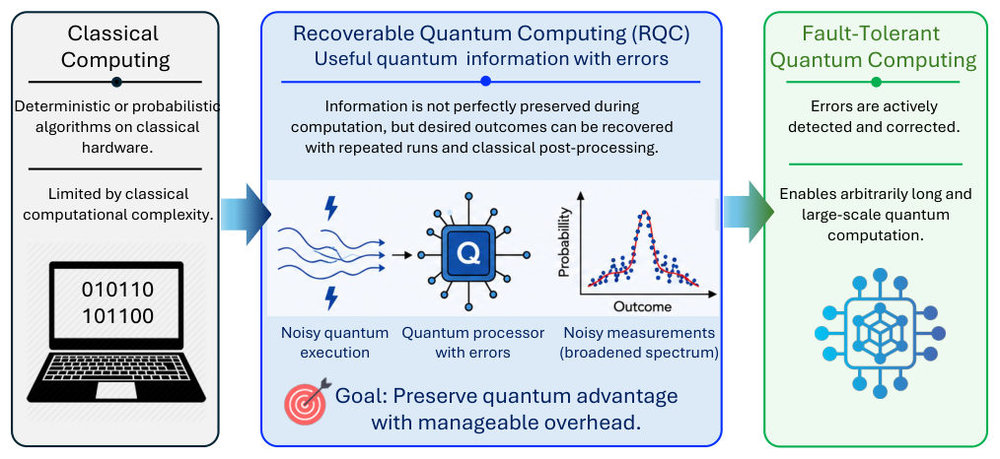
<figcaption class="paper-figure-caption"><b>Fig 1.</b> FIG. 1. Conceptual relationship among classical computing, recoverable quantum computation (RQC), and fault-tolerant quantum computing (FTQC). Classical computing is limited by classical computational complexity. FTQC achieves arbitrarily accurate quantum computation through active error detection and correction. RQC occupies an intermediate regime in which useful computational outcomes can be extracted from noisy quantum processors through repeated executions and classical post-processing while preserving quantum advantage with manageable overhead.</figcaption>
</figure>
<figure class="paper-figure-card">
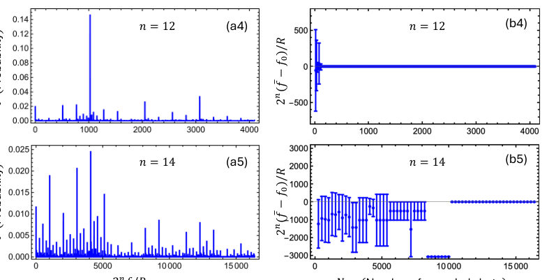
<figcaption class="paper-figure-caption"><b>Fig 2.</b> FIG. 2. Experimental demonstration of RQC using QFT period estimation on IBM quantum hardware. (a1)–(a5) Measured probability spectra for n = 4, 8, 10, 12, and 14 qubits. The horizontal axis is the normalized frequency coordinate 2nf/R, which coincides with the discrete frequency-bin index. The correct signal frequency corresponds to f0 = R/4 and is located at 2 n−2. (b1)–(b5) Recovery of the computational information (signal frequency). The vertical axis shows the normalized frequency error, 2n( ¯f −f0)/R, as a function of the number of recorded shots, Nrec. Error bars represent one standard deviation obtained from independent subsets of the experimental data.</figcaption>
</figure>
<figure class="paper-figure-card">
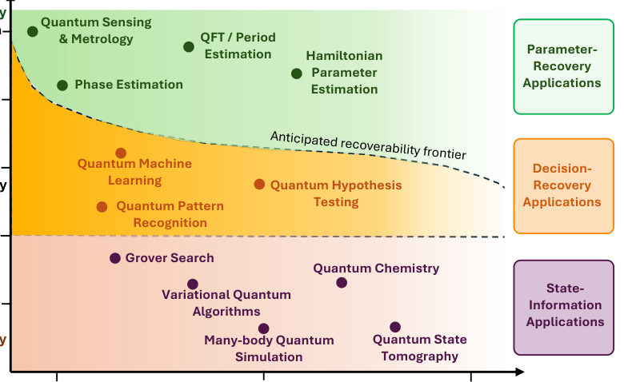
<figcaption class="paper-figure-caption"><b>Fig 3.</b> FIG. 3. Conceptual recoverability landscape of quantum applications. Recoverability is expected to decrease as the amount and complexity of the computational information to be recovered from the quantum state increase. Parameter-recovery and decision-recovery applications are anticipated to exhibit higher recoverability than applications requiring preservation of large amounts of quantum-state information. The placement of individual applications is illustrative and conceptual rather than quantitative.</figcaption>
</figure>
</div>

<p><strong>Summary.</strong> This paper introduces Recoverable Quantum Computation (RQC), a new paradigm that evaluates quantum computation based on whether task-specific information can be extracted from noisy outputs. Instead of demanding full fault tolerance, RQC focuses on preserving only the necessary computational data. This offers a practical framework for assessing useful quantum advantage in today's imperfect hardware.</p>
<p><strong>Why it may be interesting.</strong> It provides a crucial theoretical lens for assessing near-term quantum hardware capabilities beyond simple fidelity measures, directly impacting the feasibility assessment for complex quantum simulations or algorithms.</p>
<details>
<summary>Detailed structure</summary>
<p><strong>Main problem.</strong> The realization of fault-tolerant quantum computers is hindered by massive error correction overhead, raising the question of whether useful computation must wait for perfect hardware.</p>
<p><strong>Main result.</strong> The paper proposes Recoverable Quantum Computation (RQC), an information-centric paradigm showing that useful computational information can be extracted from noisy outputs even without full state fidelity.</p>
<p><strong>Method.</strong> It introduces recoverability as an operational principle, defining it by the ability to extract task-specific information with overhead preserving quantum advantage over classical methods.</p>
<p><strong>Model / system.</strong> The framework applies to general quantum computation operating in the intermediate regime between current Noisy Intermediate-Scale Quantum (NISQ) devices and future Fault-Tolerant Quantum Computers (FTQC).</p>
<p><strong>Key observables.</strong> Computational information required for a task (e.g., frequency estimate, decision label), recovery overhead, and recoverability efficiency.</p>
<p><strong>Important parameters / regimes.</strong> The degree of noise/error; the quantum advantage threshold relative to classical methods.</p>
<p><strong>Assumptions / limitations.</strong> It assumes that many practical applications only require extracting specific pieces of information rather than preserving the entire quantum state vector.</p>
<p><strong>Figures summary.</strong> Figure 1 conceptually maps the relationship between Classical Computing, RQC (intermediate regime), and FTQC, illustrating useful outcome extraction from noise.</p>
<p><strong>Paper structure.</strong> The paper introduces RQC as a paradigm shift, defines recoverability operationally with metrics, illustrates it using examples like QFT period estimation, and concludes by proposing a classification of applications and a research roadmap.</p>
</details>
<details>
<summary>Abstract</summary>
<p>Quantum computing promises transformative advances in computation, communication, sensing, and machine learning. Yet the realization of large-scale fault-tolerant quantum computers remains hindered by the enormous overhead required for quantum error correction. This challenge raises a fundamental question: Must useful quantum computing wait until fully fault-tolerant quantum hardware becomes available? In this Perspective, we propose Recoverable Quantum Computation (RQC), an information-centric paradigm for quantum computing with errors. Rather than requiring faithful preservation of the complete quantum state, RQC focuses on preserving the computational information required to accomplish a given task. A quantum computation is considered recoverable if the desired computational information can be extracted from noisy quantum outputs with an overhead that preserves quantum advantage relative to the best known classical method. We introduce recoverability as an operational principle for evaluating noisy quantum computations and propose practical metrics based on recovery overhead and recoverability efficiency. We illustrate the framework using quantum Fourier transform period estimation on IBM quantum hardware and a conceptual example from quantum machine learning, demonstrating that useful computational information may remain recoverable despite significant physical errors. Building on these examples, we propose a preliminary classification of quantum applications according to their expected recoverability and outline a research roadmap toward a predictive theory of recoverability. RQC is intended not as an alternative to fault-tolerant quantum computing, but as a complementary paradigm for understanding and evaluating useful quantum computation in the broad intermediate regime between today's noisy quantum processors and tomorrow's fault-tolerant quantum computers.</p>
</details>
<p><sub><a href="#top">↑ back to top</a></sub></p>

<p><a id="paper-2607.23066"></a></p>
<h3 id="the-ruskai-audenaert-conjecture-equipartitions-of-positive-operators"><a href="http://arxiv.org/abs/2607.23066v1">The Ruskai-Audenaert conjecture &amp; equipartitions of positive operators</a></h3>
<p><strong>Authors:</strong> Niranjan Kumar, Michael M. Wolf<br>
<strong>Type:</strong> theory · <strong>Category:</strong> quantum information and computing · <strong>PDF:</strong> <a href="https://arxiv.org/pdf/2607.23066v1">https://arxiv.org/pdf/2607.23066v1</a><br>
<strong>Analysis basis:</strong> full PDF text, analyzed in chunks
<strong>Topic relevance:</strong> <code>entanglement &amp; information structure</code> <strong>1/5</strong> · <code>quantum measurements</code> <strong>1/5</strong></p>
<div class="figure-strip-hint">↔ Scroll figures horizontally</div>
<div class="paper-figures-scroll">
<figure class="paper-figure-card">
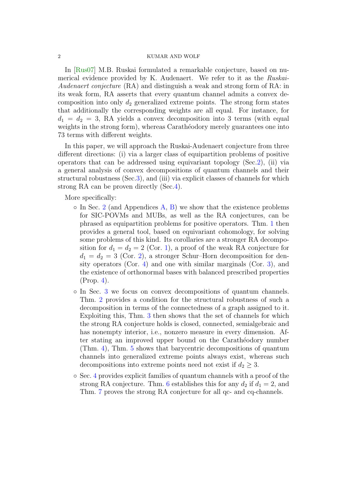
<figcaption class="paper-figure-caption"><b>Fig 1.</b> Low-resolution page preview, page 2</figcaption>
</figure>
<figure class="paper-figure-card">
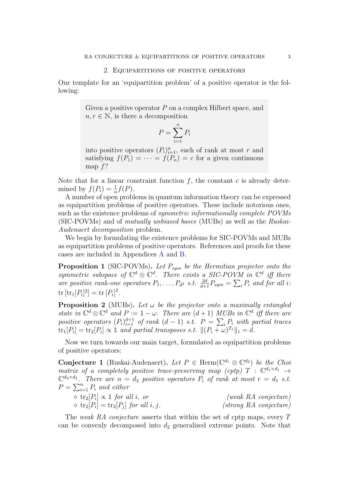
<figcaption class="paper-figure-caption"><b>Fig 2.</b> Low-resolution page preview, page 3</figcaption>
</figure>
<figure class="paper-figure-card">
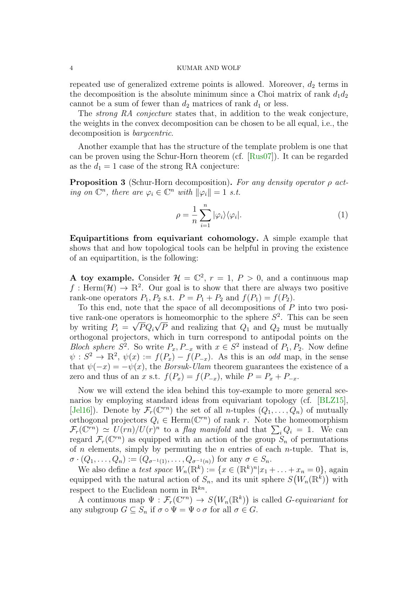
<figcaption class="paper-figure-caption"><b>Fig 3.</b> Low-resolution page preview, page 4</figcaption>
</figure>
<figure class="paper-figure-card">
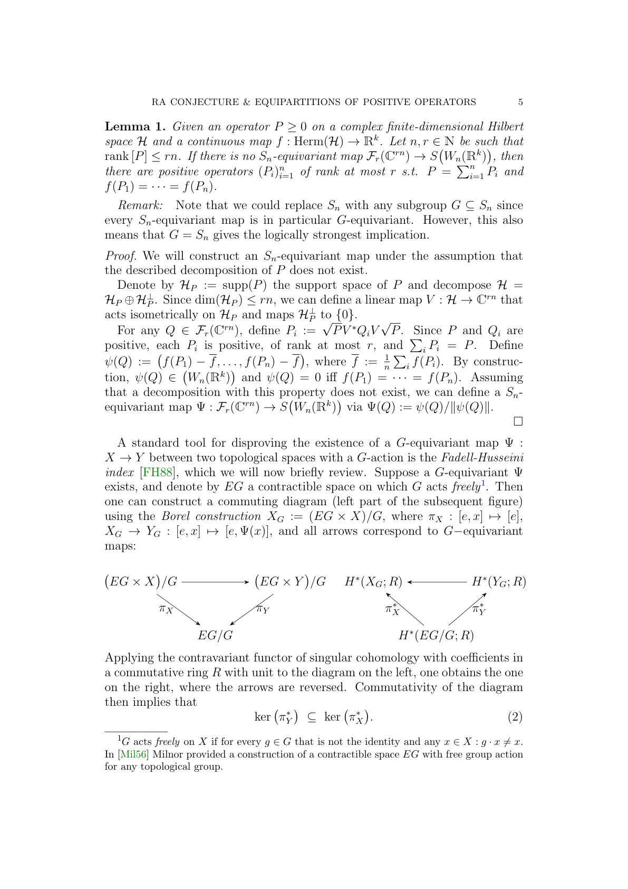
<figcaption class="paper-figure-caption"><b>Fig 4.</b> Low-resolution page preview, page 5</figcaption>
</figure>
<figure class="paper-figure-card">
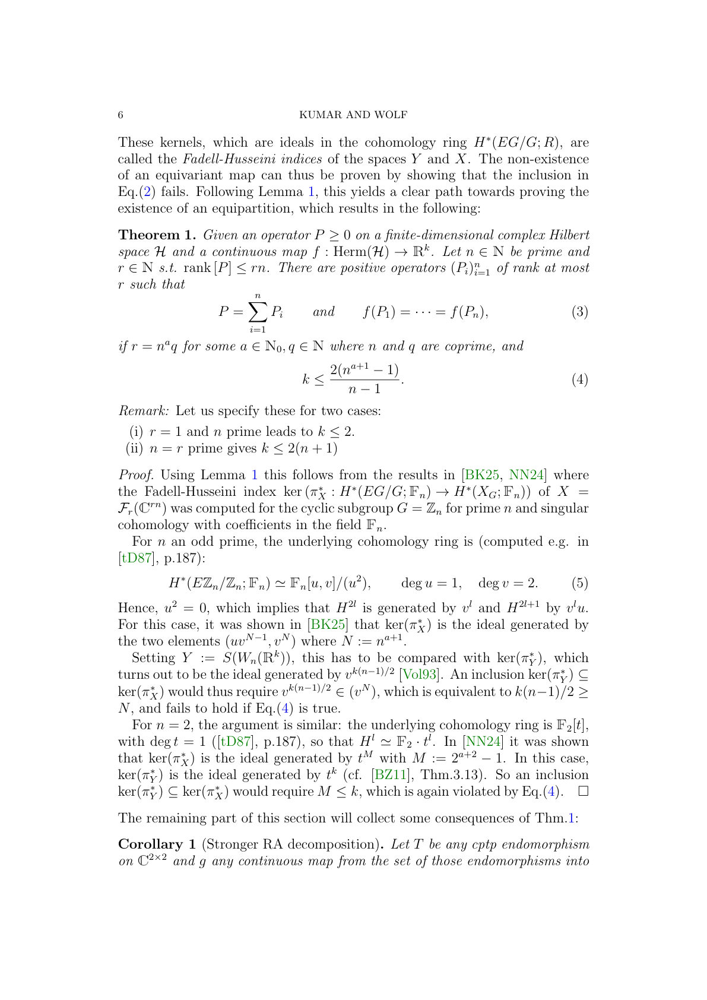
<figcaption class="paper-figure-caption"><b>Fig 5.</b> Low-resolution page preview, page 6</figcaption>
</figure>
</div>

<p><strong>Summary.</strong> This paper tackles major open problems in quantum information, such as the Ruskai-Audenaert conjecture and MUB existence, by framing them as equipartition problems for positive operators. The authors develop a sophisticated mathematical framework using equivariant cohomology to prove these conjectures for wide classes of quantum channels and related structures.</p>
<p><strong>Why it may be interesting.</strong> The reliance on deep mathematical tools like equivariant cohomology to solve fundamental questions about quantum resource theory (like channel decomposition or POVM existence) provides powerful new theoretical machinery applicable across quantum physics.</p>
<details>
<summary>Detailed structure</summary>
<p><strong>Main problem.</strong> The paper addresses open problems in quantum information theory, specifically formulating them as equipartition problems for positive operators.</p>
<p><strong>Main result.</strong> They prove the strong Ruskai-Audenaert conjecture for a large set of quantum channels and establish necessary and sufficient conditions relating MUB existence to operator decompositions using topological methods.</p>
<p><strong>Method.</strong> The authors primarily use advanced mathematical tools, including equivariant cohomology (Borsuk-Ulam theorem) and functional analysis on convex sets of operators, alongside direct algebraic proofs.</p>
<p><strong>Model / system.</strong> The core models are quantum channels ($\mathcal{T}$), represented by Choi matrices, and positive operators acting on finite-dimensional complex Hilbert spaces. The context involves decomposing these operators into rank-bounded parts.</p>
<p><strong>Key observables.</strong> Equipartition existence (i.e., finding decompositions $P = \sum P_i$ with uniform constraints $f(P_1) = \cdots = f(P_n)$), and the structure of projectors related to MUBs ($R_U$).</p>
<p><strong>Important parameters / regimes.</strong> The dimension of the Hilbert space ($d$), the number of components in the decomposition ($n$), and the rank constraints on the parts ($   ext{rank}(P_i) \le r$).</p>
<p><strong>Assumptions / limitations.</strong> The analysis often relies on establishing topological obstructions (non-existence of equivariant maps) or analyzing stationary points of functionals defined over the space of quantum channels.</p>
<p><strong>Figures summary.</strong> Not specified in the notes, but the structure suggests figures illustrating geometric constraints on operator spaces and cohomology diagrams.</p>
<p><strong>Paper structure.</strong> The paper is structured by first defining the general equipartition problem template. It then applies topological methods (equivariant cohomology) to prove existence theorems for specific physical problems like MUBs and the Ruskai-Audenaert conjecture, culminating in concrete proofs for certain classes of quantum channels.</p>
</details>
<details>
<summary>Abstract</summary>
<p>Several open problems in quantum information theory can be formulated as equipartition problems for positive operators, asking for a decomposition into bounded-rank positive parts under uniform constraints. The existence problems for SIC-POVMs and MUBs are of this type, as is the Ruskai-Audenaert conjecture. We first show that certain problems of this form can be attacked using equivariant cohomology, and then present new results on the Ruskai-Audenaert conjecture. In its weak form, this conjecture asserts that every quantum channel admits a convex decomposition into a minimal number of generalized extreme points; in its strong form, one with equal weights. We prove the strong conjecture in all dimensions for a set of channels of nonzero measure, including all cq- and qc-channels, as well as for all channels with qubit inputs. We also prove the weak conjecture for all qutrit channels, along with further results on convex decompositions of quantum channels.</p>
</details>
<p><sub><a href="#top">↑ back to top</a></sub></p>

<p><a id="paper-2607.22810"></a></p>
<h3 id="wigner-negativity-and-stellar-rank-for-su11-states"><a href="http://arxiv.org/abs/2607.22810v1">Wigner negativity and stellar rank for SU(1,1) states</a></h3>
<p><strong>Authors:</strong> A. B. Klimov, A. Muñoz, F. Leuchs, J. -P. Gazeau, L. L. Sanchez-Soto<br>
<strong>Type:</strong> theory · <strong>Category:</strong> other · <strong>PDF:</strong> <a href="https://arxiv.org/pdf/2607.22810v1">https://arxiv.org/pdf/2607.22810v1</a><br>
<strong>Analysis basis:</strong> full PDF text, analyzed in chunks
<strong>Topic relevance:</strong> <code>Keldysh / 2PI / non-Gaussian methods</code> <strong>1/5</strong> · <code>entanglement &amp; information structure</code> <strong>1/5</strong></p>
<div class="figure-strip-hint">↔ Scroll figures horizontally</div>
<div class="paper-figures-scroll">
<figure class="paper-figure-card">
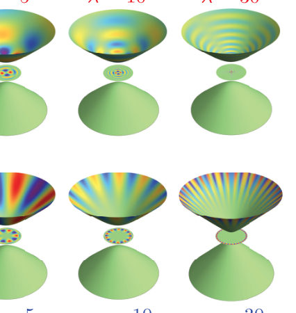
<figcaption class="paper-figure-caption"><b>Fig 1.</b> Figure 1: Density plots of the real part of the harmonic functions uλm(ζ) on the upper sheet of the hy- perboloid H+ 2 , together with their associated distributions on the unit disk D obtained via stereographic projection from the south pole. The corresponding indexes are indicated in each plot.</figcaption>
</figure>
<figure class="paper-figure-card">
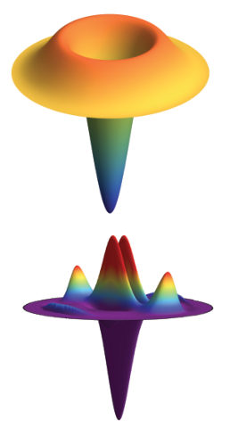
<figcaption class="paper-figure-caption"><b>Fig 2.</b> Figure 2: Plots of the Wigner function on the unit disk for the states discussed in the text. Upper panel: coherent state (left) and basis state |k, µ⟩. Lower panel: even cat state (left) and odd cat state (right).</figcaption>
</figure>
<figure class="paper-figure-card">
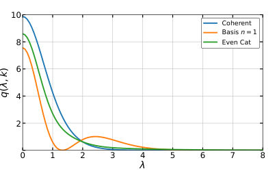
<figcaption class="paper-figure-caption"><b>Fig 3.</b> Figure 3: Multipole norm as a function of the order λ for (left panel) a coherent state for different values of the Bargmann parameter k and (right panel) the different states considered in the text all of them with k = 1.</figcaption>
</figure>
</div>

<p><strong>Summary.</strong> This paper develops advanced phase-space tools to measure quantumness in systems possessing SU(1,1) symmetry. It establishes that Wigner negativity is a reliable indicator of nonclassicality for these systems, contrasting with other symmetries. By combining this with generalized multipole expansions, the authors offer a comprehensive mathematical toolkit for characterizing quantum states.</p>
<p><strong>Why it may be interesting.</strong> This work provides a rigorous mathematical framework for quantifying quantum resources in systems with hyperbolic symmetries, offering an alternative diagnostic tool beyond standard quadrature measurements relevant to quantum optics and field theory.</p>
<details>
<summary>Detailed structure</summary>
<p><strong>Main problem.</strong> The goal is to systematically characterize and quantify quantum resources (quantumness) for systems governed by SU(1,1) dynamical symmetry using phase-space methods.</p>
<p><strong>Main result.</strong> For SU(1,1) systems, Wigner negativity serves as an unambiguous sufficient witness of nonclassicality because the Wigner function remains strictly positive for all coherent states. The analysis provides a comprehensive toolkit combining Wigner negativity and generalized multipoles.</p>
<p><strong>Method.</strong> The authors construct covariant quasiprobability distributions on the two-sheeted hyperboloid and analyze quantumness using spectral methods, harmonic expansions, and comparisons between different state representations (e.g., cat states vs. coherent states).</p>
<p><strong>Model / system.</strong> The study focuses on quantum systems exhibiting SU(1,1) dynamical symmetry. The phase space is modeled by the two-sheeted hyperboloid or Poincaré unit disk, utilizing Perelomov SU(1,1) coherent states.</p>
<p><strong>Key observables.</strong> Wigner negativity (negative volume), Stellar Rank (zeros of the Husimi Q-function), and generalized multipole strengths ($q_{\varrho}(k, \lambda)$).</p>
<p><strong>Important parameters / regimes.</strong> The analysis involves parameters related to the excitation number ($n$), hyperbolic coordinates ($\zeta$), and spectral indices ($\lambda$).</p>
<p><strong>Assumptions / limitations.</strong> The analysis assumes the applicability of harmonic function theory on the hyperboloid and relies on comparing state properties against those of coherent states.</p>
<p><strong>Figures summary.</strong> Figures illustrate density plots of harmonic functions, Wigner functions for various states (coherent, basis, cat), and plots showing multipole norms ($q$) versus spectral index ($\lambda$).</p>
<p><strong>Paper structure.</strong> The paper proceeds by establishing the covariant quasiprobability framework on the hyperboloid. It then analyzes key diagnostics like Wigner negativity and stellar rank, introduces generalized multipoles via harmonic expansion, and finally applies these tools to specific quantum states (e.g., cat states) to quantify nonclassicality.</p>
</details>
<details>
<summary>Abstract</summary>
<p>Quasiprobability distributions for systems endowed with SU(1,1) dynamical symmetry have received surprisingly little attention, despite the central role of this symmetry in two-photon physics, squeezed states, and nonlinear interferometry. Here, we fill this gap by constructing a full covariant family of $s$-ordered quasiprobability distributions defined on the two-sheeted hyperboloid, or equivalently, on the Poincaré unit disk via stereographic projection. A key result is that the Wigner function is strictly positive for all Perelomov SU(1,1) coherent states, in sharp contrast to the SU(2) case. This positivity endows Wigner negativity with an unambiguous operational meaning: any negative volume is a direct signature of genuinely quantum behavior. We further examine the stellar rank of SU(1,1) states, defined through the zeros of the Husimi $Q$-function, and show how it compares with Wigner negativity as a geometry-adapted witness of nonclassicality in this setting. We further introduce a hierarchy of generalized multipoles through a harmonic expansion of the density operator on the hyperboloid, providing a complementary framework for probing quantumness. This offers a comprehensive toolkit for characterizing and quantifying quantum resources in SU(1,1) systems.</p>
</details>
<p><sub><a href="#top">↑ back to top</a></sub></p>

<p><a id="paper-2607.23990"></a></p>
<h3 id="decomp2-description-complexity-aware-decomposition"><a href="http://arxiv.org/abs/2607.23990v1">DeComp2: Description Complexity aware Decomposition</a></h3>
<p><strong>Authors:</strong> Aritra Sarkar<br>
<strong>Type:</strong> theory · <strong>Category:</strong> quantum information and computing · <strong>PDF:</strong> <a href="https://arxiv.org/pdf/2607.23990v1">https://arxiv.org/pdf/2607.23990v1</a><br>
<strong>Analysis basis:</strong> full PDF text, analyzed in chunks
<strong>Topic relevance:</strong> <code>entanglement &amp; information structure</code> <strong>1/5</strong></p>
<div class="figure-strip-hint">↔ Scroll figures horizontally</div>
<div class="paper-figures-scroll">
<figure class="paper-figure-card">
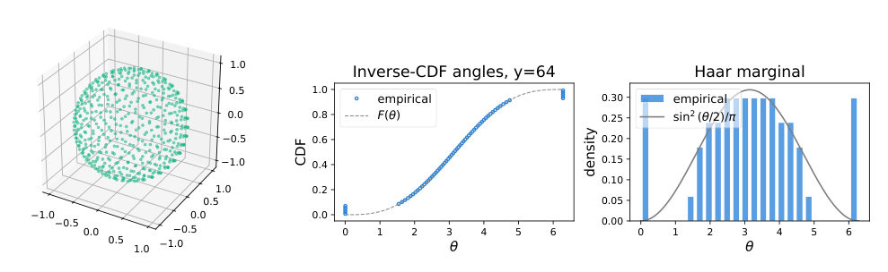
<figcaption class="paper-figure-caption"><b>Fig 1.</b> Figure 1 Deterministic target ensemble of 𝑆𝑈(2): axis grid (left) and Haar-induced angle grid (right) at (𝑥, 𝑦) = (512, 64).</figcaption>
</figure>
<figure class="paper-figure-card">
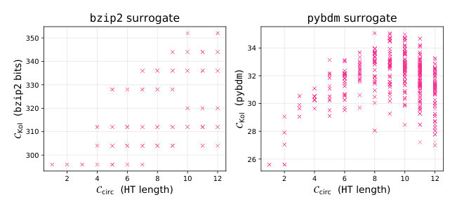
<figcaption class="paper-figure-caption"><b>Fig 2.</b> Figure 2 (Ccirc, CKol) scatter, one point per Fibonacci-grid target covered by the HT enumeration at (𝑥, 𝑦, 𝜀, 𝑀) = (512, 64, 0.15, 12). Left: bzip2 bit-length surrogate of CKol. Right: pybdm block-decomposition surrogate. Off-diagonal spread under both surrogates supports the independence-of-axes claim (i).</figcaption>
</figure>
<figure class="paper-figure-card">
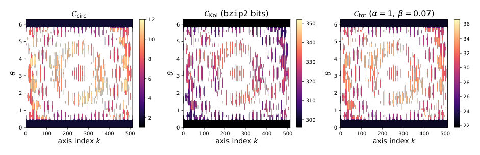
<figcaption class="paper-figure-caption"><b>Fig 3.</b> Figure 3 Heatmaps of Ccirc, CKol (bzip2) and Ctot over the axis index 𝑘∈{1, . . . , 𝑥} and rotation angle 𝜃∈[0, 2𝜋] at (𝑥, 𝑦, 𝜀, 𝑀) = (512, 64, 0.15, 12). The two cost fields are qualitatively different, so Ctot is not a monotone reshading of either component alone.</figcaption>
</figure>
<figure class="paper-figure-card">

<figcaption class="paper-figure-caption"><b>Fig 4.</b> Figure 4 Ctot optima distinctness for a single Fibonacci-grid target (𝑘, 𝑗) = (41, 10) at (𝑥, 𝑦, 𝜀, 𝑀) = (512, 64, 0.15, 12) with weights (𝛼, 𝛽) = (1, 0.07). Horizontal axis: HT-enumeration index of the 10 strings inside the 𝜀-ball. Left axis: 𝛼Ccirc (circles); right axis: 𝛽CKol (bzip2 bits, squares). Vertical guides mark arg min 𝛼Ccirc, arg min 𝛽CKol, and arg min Ctot; the three minimizers are at distinct decomposition candidates, so the joint cost picks a non-trivial decomposition (11, 320) that neither component alone selects.</figcaption>
</figure>
<figure class="paper-figure-card">
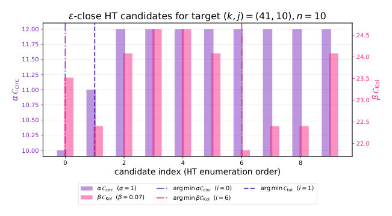
<figcaption class="paper-figure-caption"><b>Fig 5.</b> Figure 4 illustrates one such split target into the candidate-level picture. For the Fibonacci-grid point (𝑘, 𝑗) = (41, 10), the 𝜀-ball contains 10 HT-strings. The per-axis minimizers arg min 𝛼Ccirc at raw (Ccirc, CKol) = (10, 336) and arg min 𝛽CKol at (12, 312) each beat the other only on its own axis. The joint minimizer arg min Ctot sits distinctly at (11, 320): a candidate that is neither the shortest nor the most compressible HT-string in the ball, but is the unique minimizer under the additive cost. The corresponding unitary, the output decompositions and their corresponding length, bzip encoding length and fidelity are listed below.</figcaption>
</figure>
</div>

<p><strong>Summary.</strong> This paper proposes DeComp2, a new metric for quantum compilation that combines the standard circuit complexity with a Kolmogorov-style description complexity. By minimizing this total cost, it regularizes the optimization landscape to favor structured decompositions over merely shortest ones. This suggests incorporating structural information into compiler objectives for better resource management.</p>
<p><strong>Why it may be interesting.</strong> It provides a mathematically rigorous framework for improving quantum compiler design by incorporating information-theoretic measures of program structure alongside physical execution costs.</p>
<details>
<summary>Detailed structure</summary>
<p><strong>Main problem.</strong> Quantum compilers currently optimize only for execution resources (like gate count or depth), ignoring the structural complexity of the program that generates the circuit.</p>
<p><strong>Main result.</strong> The proposed total cost function, $C_{	ext{tot}} = \alpha C_{	ext{circ}} + eta C_{	ext{Kol}}$, selects compilation candidates that are superior to those chosen by minimizing either execution cost or description length alone.</p>
<p><strong>Method.</strong> The authors introduce a regularization term based on Kolmogorov complexity ($C_{	ext{Kol}}$) and minimize the weighted sum of this term with the standard circuit complexity ($C_{	ext{circ}}$).</p>
<p><strong>Model / system.</strong> The problem is instantiated for decomposing an arbitrary target unitary $U$ within the $SU(2)$ group, treating the compilation process as finding a sequence of elementary gates.</p>
<p><strong>Key observables.</strong> Total Complexity ($\mathcal{C}_{	ext{tot}}$), Circuit Complexity ($\mathcal{C}_{	ext{circ}}$), and Kolmogorov Description Complexity ($\mathcal{C}_{	ext{Kol}}$).</p>
<p><strong>Important parameters / regimes.</strong> Weights $\alpha$ and $eta$; the tolerance $\epsilon$ for unitary approximation.</p>
<p><strong>Assumptions / limitations.</strong> The approach assumes that total complexity can be modeled as an additive combination of positional (circuit) and kinetic (description) entropy, borrowing structure from physical laws rather than deriving it from them.</p>
<p><strong>Paper structure.</strong> The paper establishes the limitation of execution-only optimization, proposes the $\mathcal{C}_{	ext{tot}}$ objective function by analogy to second law thermodynamics, and validates this joint cost on $SU(2)$ decompositions, showing its unique selection capability.</p>
</details>
<details>
<summary>Abstract</summary>
<p>Quantum compilers optimize execution-only proxies such as gate count, depth, and fidelity, treating the compiled circuit as the unit of cost. This conflates two distinct resources, how much the substrate has to do at run time, and how much has to be said to describe what to do. Unrolling a looped program leaves run-time cost unchanged while erasing the hierarchical structure on which downstream optimization and reuse rely.   We propose lifting the compiler objective from execution to life cycle complexity by pairing the circuit complexity $\mathcal{C}_{\mathrm{circ}}$ with a Kolmogorov-style description complexity $\mathcal{C}_{\mathrm{Kol}}$ of the emitted circuit, and minimizing the additive total $\mathcal{C}_{\mathrm{tot}} = α\,\mathcal{C}_{\mathrm{circ}} + β\,\mathcal{C}_{\mathrm{Kol}}$. The mirrors the additive positional and kinetic entropy of the second law of quantum complexity, and reads as a minimum-description-length regularizer over the otherwise degenerate set of $\mathcal{C}_{\mathrm{circ}}$-minimizers.   We instantiate the objective on $SU(2)$ through exhaustive HT-enumeration with compression-based surrogates upper-bounding $\mathcal{C}_{\mathrm{Kol}}$. Across a Haar-representative target grid the two surrogates correlate positively with $\mathcal{C}_{\mathrm{circ}}$ yet break its rank order on a non-trivial fraction of points, ruling out a tight functional dependence. With calibrated weights the joint cost selects, for a small but operationally meaningful fraction of targets, a candidate that is neither the shortest nor the most compressible HT-string in the $\varepsilon$-ball, exhibiting the compilation choices a $\mathcal{C}_{\mathrm{circ}}$-only optimizer discards and motivating $\mathcal{C}_{\mathrm{Kol}}$ as an active optimization signal for hierarchical intermediate representation for compiler.</p>
</details>
<p><sub><a href="#top">↑ back to top</a></sub></p>

<p><a id="paper-2607.23331"></a></p>
<h3 id="effects-of-curvature-scalar-coupling-on-vacuum-energy-in-flat-31-dimensional-space-time"><a href="http://arxiv.org/abs/2607.23331v1">Effects of Curvature-Scalar Coupling on Vacuum Energy in Flat (3+1)-Dimensional Space-Time</a></h3>
<p><strong>Authors:</strong> Volodymyr Gorkavenko, Oleh Barabash, Pavlo Nakaznyi, Mariia Tsarenkova, Nazar Yakovenko, Andrii Zaporozhchenko<br>
<strong>Type:</strong> theory · <strong>Category:</strong> other · <strong>PDF:</strong> <a href="https://arxiv.org/pdf/2607.23331v1">https://arxiv.org/pdf/2607.23331v1</a><br>
<strong>Analysis basis:</strong> full PDF text, analyzed in chunks
<strong>Topic relevance:</strong> <code>Keldysh / 2PI / non-Gaussian methods</code> <strong>1/5</strong></p>
<div class="figure-strip-hint">↔ Scroll figures horizontally</div>
<div class="paper-figures-scroll">
<figure class="paper-figure-card">
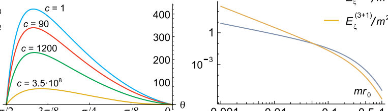
<figcaption class="paper-figure-caption"><b>Fig 1.</b> Figure 1: Left panel: the induced dimensionless vacuum energy E3+1 ξ /m2 is plotted as a function of the parameter θ, which characterizes the Robin boundary conditions on the surface of the impenetrable magnetic tube, for various tube thicknesses. For clarity, the curves are multiplied by the coefficient c. Right panel: comparison of the induced dimensionless vacuum energy in (3 + 1)- and (2 + 1)-dimensional space-times as functions of the dimensionless tube thickness mr0 with the boundary condition parameter θ = −1. For both panels, we restrict ourselves to a half-integer magnetic flux F = 1/2.</figcaption>
</figure>
<figure class="paper-figure-card">

<figcaption class="paper-figure-caption"><b>Fig 2.</b> Fig.1. One can see that the induced dimensionless vacuum energy in three-dimensional flat space- time, E(3+1) ξ /m2, induced by the presence of the magnetic topological defect is independent of the curvature coupling ξ only in the limiting cases of Dirichlet (θ = 0) and Neumann (θ = −π/2) boundary conditions, where E(3+1) ξ /m2 = 0. For intermediate values, −π/2 &lt; θ &lt; 0, the induced</figcaption>
</figure>
<figure class="paper-figure-card">
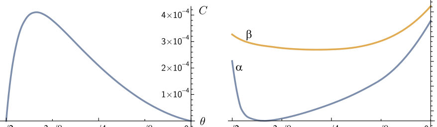
<figcaption class="paper-figure-caption"><b>Fig 3.</b> Figure 2: Left panel: the dependence of the coefficient C(θ, F) in the asymptotic relation at mr0 ≪1 (21) on boundary condition parameter θ. Right panel: the dependence of the coefficients α(θ, F) and β(θ, F) in the asymptotic relations at mr0 ≫1 (22), (23) on boundary condition parameter θ. We restrict ourselves to a half-integer magnetic flux F = 1/2.</figcaption>
</figure>
<figure class="paper-figure-card">
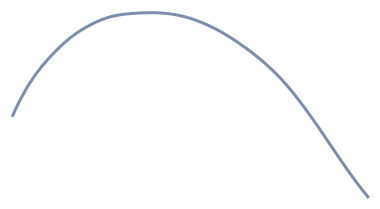
<figcaption class="paper-figure-caption"><b>Fig 4.</b> Figure 3: The dependence of the tube thickness mr0, at which the dimensionless induced vacuum energy E(3+1) ξ /m2 in (3 + 1)-dimensional space-time equals the corresponding dimensionless</figcaption>
</figure>
</div>

<p><strong>Summary.</strong> This paper calculates the vacuum energy induced by a magnetic topological defect on a scalar field in flat spacetime, incorporating terms dependent on spacetime curvature. The key finding is that using general boundary conditions introduces an explicit dependence on the curvature coupling constant ($\xi$), highlighting the crucial role of boundary physics in quantum vacuum effects.</p>
<p><strong>Why it may be interesting.</strong> While focused on QFT in curved spacetime, the rigorous treatment of boundary conditions (Robin vs. Dirichlet/Neumann) and the explicit inclusion of curvature coupling ($\xi$) provide general theoretical tools applicable to effective field theories describing quantum systems near boundaries or defects.</p>
<details>
<summary>Detailed structure</summary>
<p><strong>Main problem.</strong> The study investigates how a magnetic topological defect influences the vacuum polarization, quantified by the induced vacuum energy, of a charged massive scalar field in flat (3+1)-dimensional spacetime.</p>
<p><strong>Main result.</strong> The induced vacuum energy explicitly depends on the curvature coupling constant ($\xi$) when general Robin boundary conditions are applied, unlike special cases like Dirichlet or Neumann boundaries. This dependence is significant even in flat space-time.</p>
<p><strong>Method.</strong> The analysis involves solving the stationary Klein-Gordon equation using Bessel functions and calculating the renormalized expectation value of the energy-momentum tensor ($T_{00}$).</p>
<p><strong>Model / system.</strong> The system models a charged massive scalar field interacting with spacetime curvature ($\xi R$) near an impenetrable, finite-thickness cylindrical tube carrying a magnetic flux. The analysis employs the most general Robin boundary condition.</p>
<p><strong>Key observables.</strong> Induced vacuum energy density ($\epsilon$ or $E^{(3+1)}_\xi$).</p>
<p><strong>Important parameters / regimes.</strong> Curvature coupling constant ($\xi$), magnetic flux ($F$), tube radius ($r_0$), and boundary condition parameter ($   heta$).</p>
<p><strong>Assumptions / limitations.</strong> The analysis is performed in flat spacetime, and the calculation requires renormalization by subtracting the zero-flux contribution to handle divergences.</p>
<p><strong>Figures summary.</strong> Figures compare dimensionless vacuum energy dependence on $    heta$ and tube thickness ($m r_0$), showing crossover points between (3+1)D and (2+1)D results.</p>
<p><strong>Paper structure.</strong> The paper establishes the Lagrangian involving curvature coupling, derives the governing Klein-Gordon equation with general Robin boundary conditions, calculates the vacuum energy using $T_{00}$, and compares the resulting energy in (3+1)D to known limits and lower dimensions.</p>
</details>
<details>
<summary>Abstract</summary>
<p>We investigated how a magnetic topological defect affects the vacuum polarization of a charged massive scalar field in a flat $(3+1)$-dimensional space-time. The defect was modeled as an impenetrable to matter field finite-thickness tube with magnetic flux inside. We implemented the most general form of the Robin boundary condition on the surface of the magnetic tube, which enables a fully general analysis of the problem. We have found that in flat spacetime, the total vacuum energy generated by a magnetic topological defect depends on the curvature $ξ$, except for special cases corresponding to the Dirichlet and Neumann boundary conditions. By contrast, when Robin's general boundary conditions are imposed, the induced vacuum energy acquires an explicit dependence on the curvature coupling $ξ$, which is significant even in flat space-time. A detailed study of the dependence of the effect on the boundary condition parameter has been carried out. The obtained results highlight the nontrivial role played by boundary conditions in vacuum polarization phenomena.</p>
</details>
<p><sub><a href="#top">↑ back to top</a></sub></p>

<p><a id="paper-2607.24258"></a></p>
<h3 id="mpstab-an-hybrid-stabilizers-tensor-network-quantum-circuit-simulator"><a href="http://arxiv.org/abs/2607.24258v1">MPStab: an hybrid stabilizers tensor-network quantum circuit simulator</a></h3>
<p><strong>Authors:</strong> Giulio Crognaletti, Mattia Robbiano, Michele Grossi, Matteo Robbiati<br>
<strong>Type:</strong> theory · <strong>Category:</strong> numerical methods · <strong>PDF:</strong> <a href="https://arxiv.org/pdf/2607.24258v1">https://arxiv.org/pdf/2607.24258v1</a><br>
<strong>Analysis basis:</strong> full PDF text, analyzed in chunks
<strong>Topic relevance:</strong> <code>methods for driven-dissipative</code> <strong>1/5</strong></p>
<div class="figure-strip-hint">↔ Scroll figures horizontally</div>
<div class="paper-figures-scroll">
<figure class="paper-figure-card">
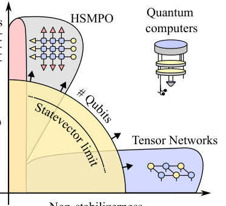
<figcaption class="paper-figure-caption"><b>Fig 1.</b> FIG. 1. A qualitative representation of classical simulator realms. Laying on the entanglement axis, stabilizers simu- lators allow representing pure-Clifford circuits at large scale. On the magic axis, tensor networks consent simulation of large systems if entanglement growth remains under control. Mixed approaches, like the hybrid stabilizer-matrix product opera- tor (HSMPO) implemented here, push the boundaries of the classical simulators closer to the bijector of the plane, which corresponds to the quantum computers realm.</figcaption>
</figure>
<figure class="paper-figure-card">
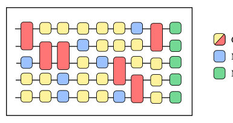
<figcaption class="paper-figure-caption"><b>Fig 2.</b> FIG. 2. Any quantum circuit can be written in terms of Clif- ford operations (red and yellow gates) alternated with local magic operations (blue gates).</figcaption>
</figure>
<figure class="paper-figure-card">
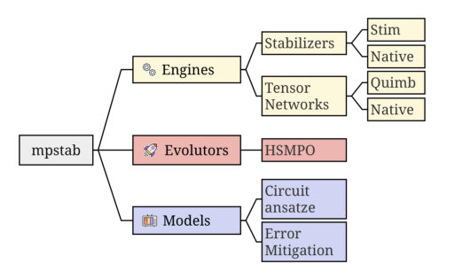
<figcaption class="paper-figure-caption"><b>Fig 3.</b> FIG. 3. Schematic representation of mpstab 0.1.0.</figcaption>
</figure>
<figure class="paper-figure-card">
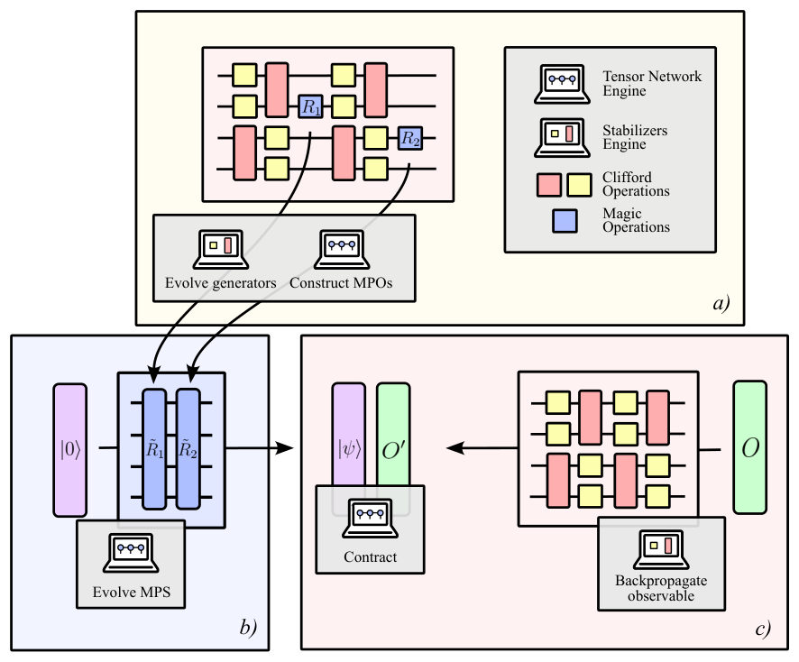
<figcaption class="paper-figure-caption"><b>Fig 4.</b> FIG. 4. mpstab’s operational workflow when computing the expectation value of an observable O over the state represented by an HSMPO. A tensor network and a stabilizers engines cooperate to prepare the evolved MPS and use it to perform the contraction with the given observable.</figcaption>
</figure>
<figure class="paper-figure-card">
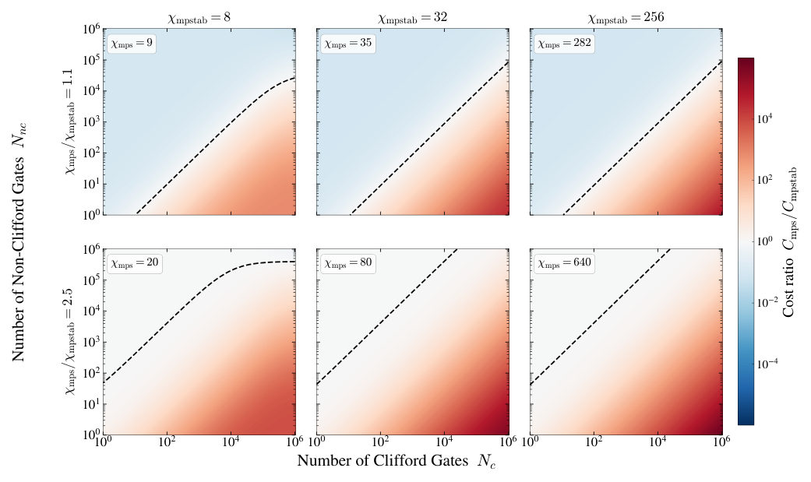
<figcaption class="paper-figure-caption"><b>Fig 5.</b> FIG. 5. Cost ratio Cmps/Cmpstab as a function of Clifford (NC) and non-Clifford (NnC) gate counts. Red regions indicate where mpstab is cheaper than standard MPS; blue regions indicate the opposite. The dashed curve marks the iso-cost boundary Cmps = Cmpstab. Columns fix the mpstab bond dimension χmpstab ∈{8, 32, 256}, spanning strongly- to weakly-compressed hybrid representations; rows fix the ratio χmps/χmpstab ∈{1.1, 2.5} between the two methods, corresponding respectively to a weak and a strong fidelity advantage of the hybrid method. The leftmost column exhibits the arched regime, where the stabilizer overhead NnC NC saturates the boundary at high NC; the middle and right columns...</figcaption>
</figure>
</div>

<p><strong>Summary.</strong> This paper introduces MPStab, a novel hybrid simulator that combines the exact simulation power of stabilizer formalism for Clifford gates with the efficiency of tensor networks for non-Clifford rotations. It allows for polynomial-time simulation of complex quantum circuits by treating different gate types optimally. This is crucial for benchmarking and understanding the computational boundaries between classical and quantum computation.</p>
<p><strong>Why it may be interesting.</strong> The explicit combination of stabilizer methods with tensor networks provides a powerful tool to simulate quantum dynamics in regimes previously inaccessible or computationally prohibitive for pure MPS approaches.</p>
<details>
<summary>Detailed structure</summary>
<p><strong>Main problem.</strong> Efficiently simulating quantum circuits on classical computers, which is challenging due to exponential state space growth from entanglement.</p>
<p><strong>Main result.</strong> The proposed hybrid simulator (MPStab) achieves polynomial-time simulation for circuits mixing Clifford and non-Clifford gates by combining exact stabilizer tracking with tensor network evolution.</p>
<p><strong>Method.</strong> It decomposes the unitary circuit into alternating Clifford blocks (simulated exactly via stabilizers) and single-qubit rotations (encoded as bond-2 Matrix Product Operators, MPOs).</p>
<p><strong>Model / system.</strong> The method targets general quantum circuits composed of Pauli strings and arbitrary unitaries, which are decomposed into Clifford ($C$) and rotation ($R$) components.</p>
<p><strong>Key observables.</strong> Expectation values of linear combinations of Pauli observables ($\langle O 
angle$), Fidelity Lower Bound ($F_{lb}$), and Execution Time.</p>
<p><strong>Important parameters / regimes.</strong> Number of qubits ($L$), Circuit depth ($D$), Maximum bond dimension ($\chi_{	ext{max}}$), and Magic retention ($eta$).</p>
<p><strong>Assumptions / limitations.</strong> The tensor network evolution for rotations is an approximation due to bond dimension truncation ($\chi$); the method relies on circuit decomposition into Clifford/non-Clifford parts.</p>
<p><strong>Figures summary.</strong> Figures illustrate the simulator's modular structure, the operational workflow combining stabilizer backpropagation and TN forward evolution, and benchmark results comparing time cost and fidelity against pure tensor network methods across varying magic content.</p>
<p><strong>Paper structure.</strong> The paper introduces the hybrid formalism (HSMPO), details the implementation of separate engines for Clifford (stabilizer) and non-Clifford (MPO/TN) parts, validates the approach by benchmarking performance against standard TN simulators using fidelity and time metrics, and discusses future algorithmic extensions.</p>
</details>
<details>
<summary>Abstract</summary>
<p>The development of techniques for simulating quantum systems using classical computers is a paramount task for two primary reasons: i) there exist configurations for which classical computers are remarkably effective and will continue to be so, and ii) exploring the limits of classical computation facilitates the identification of the regimes of competence for quantum computers. In this work, we present MPStab, a quantum circuit simulator based on a hybrid formalism combining stabilizers and tensor networks, recently introduced in Ref. [1]. We present the package, its core functionalities, and explore its performances in a few interesting simulation regimes.</p>
</details>
<p><sub><a href="#top">↑ back to top</a></sub></p>

<p><a id="paper-2607.24725"></a></p>
<h3 id="pulse-engineering-via-projection-of-response-functions-at-infinite-nonlinear-order"><a href="http://arxiv.org/abs/2607.24725v1">Pulse engineering via projection of response functions at infinite nonlinear order</a></h3>
<p><strong>Authors:</strong> Lia Kley, Ludwig Mathey<br>
<strong>Type:</strong> theory · <strong>Category:</strong> quantum information and computing · <strong>PDF:</strong> <a href="https://arxiv.org/pdf/2607.24725v1">https://arxiv.org/pdf/2607.24725v1</a><br>
<strong>Analysis basis:</strong> full PDF text, analyzed in chunks
<strong>Topic relevance:</strong> <code>quantum measurements</code> <strong>1/5</strong></p>
<div class="figure-strip-hint">↔ Scroll figures horizontally</div>
<div class="paper-figures-scroll">
<figure class="paper-figure-card">
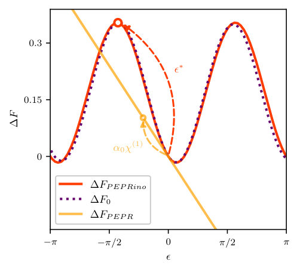
<figcaption class="paper-figure-caption"><b>Fig 1.</b> Figure 1. Fidelity landscape and update strat- egy. We show the fidelity landscape ∆F0 as a func- tion of the parameter ϵ, corresponding to a shift of a trainable parameter θj,k of a control operator Bj, for a two-qubit system discussed in the text. Specifically, the shift is given by θj,k →θj,k −2ϵ</figcaption>
</figure>
<figure class="paper-figure-card">
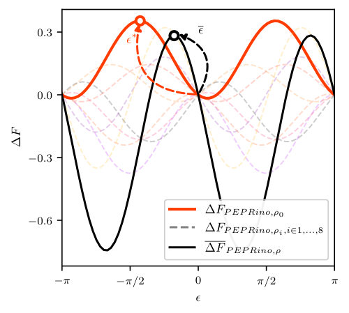
<figcaption class="paper-figure-caption"><b>Fig 2.</b> Figure 2. Change of the fidelity landscape for dif- ferent initial states. We show the change of the fidelity ∆FP EP Rino as a function of ϵ for 8 random initial states ρi (dashed lines), as well as the initial state ρ0 (red line) which is used in Fig. 1. ∆FP EP Rino is evaluated at the same random time tr and for the same control operator for all nB = 9 initial states ρ. This figure motivates that, for gate optimization, the averaged fidelity landscape has to be considered (black line) and an averaged update θj,k →θj,k −¯ϵ 2</figcaption>
</figure>
<figure class="paper-figure-card">
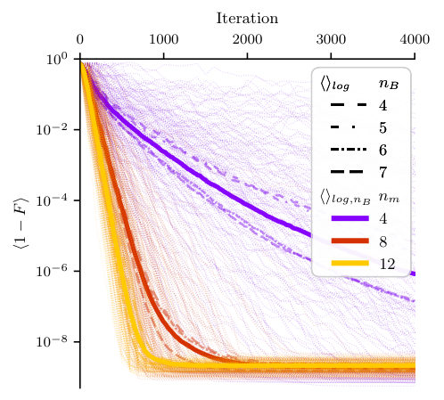
<figcaption class="paper-figure-caption"><b>Fig 3.</b> Figure 3. Infidelity of the 2-qubit optimization pro- cess using PEPRino. We show the infidelity during the optimization process of the QFT for two qubits as a func- tion of iteration steps for PEPRino. Thin dotted lines rep- resent individual optimization runs for different batch sizes nB ∈{4, 5, 6, 7} and numbers of modes nm ∈{4, 8, 12} in the control pulse parameterization. The thick solid lines show the logarithmic average across all considered runs and batch sizes for the specified number of modes. Additionally, the thin solid lines with distinct line styles illustrate the loga- rithmic averages for each batch size, with the mode number indicated by the corresponding color. Our method...</figcaption>
</figure>
<figure class="paper-figure-card">
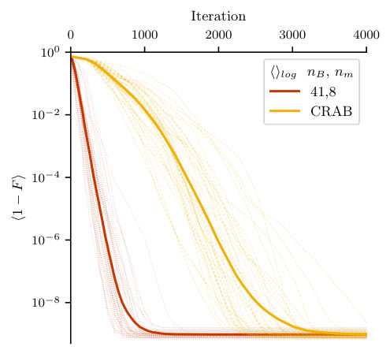
<figcaption class="paper-figure-caption"><b>Fig 4.</b> Figure 4. PEPRino vs CRAB for the 2-qubit QFT op- timization. We show the infidelity obtained using PEPRino (red) and CRAB (orange) as a function of iterations. For PEPRino, we choose nm = 8 with a batch size of nB = 41, in accordance with the size of the simplex used in CRAB, where we also consider nm = 8. The dashed lines are individual optimization runs, and the solid lines are the logarithmic av- erage over the runs. Both methods converge against the same lower bound, which is reached in fewer iterations utilizing our proposed method. Additionally, the variance of the individ- ual runs and computational time for individual iteration steps are less for PEPRino compared to CRAB.</figcaption>
</figure>
<figure class="paper-figure-card">
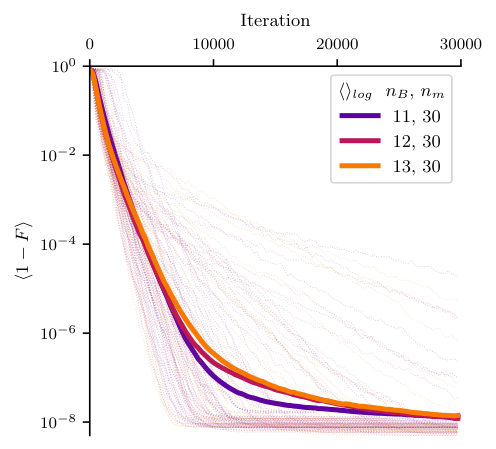
<figcaption class="paper-figure-caption"><b>Fig 5.</b> Figure 5. Infidelity of the 3-qubit optimization process using PEPRino. We present the infidelity during the op- timization process of the QFT for three qubits as a function of iteration steps for PEPRino. For three qubits, we con- sider nm = 30 modes in the control pulse parameterization. We show the results for batch sizes nB = {11, 12, 13}. The solid lines are the logarithmic average over an ensemble of 40 optimization runs for the given batch sizes. The findings agree with the findings for the 2-Qubit-QFT optimization. For increasing batch sizes, we find a tendency towards con- vergence in fewer iteration steps, however, the behavior and result remain generally similar for the range of...</figcaption>
</figure>
</div>

<p><strong>Summary.</strong> This paper introduces PEPRino, a novel algorithm for optimal quantum control that avoids hyperparameters and gradients by analyzing system response functions to infinite order. By leveraging only the first two-order susceptibilities, it efficiently finds high-fidelity control pulses for multi-qubit systems like those implementing the QFT. The results confirm its superior convergence speed compared to existing state-of-the-art methods.</p>
<p><strong>Why it may be interesting.</strong> It provides a sophisticated theoretical tool for designing robust quantum pulses by efficiently characterizing the control landscape without relying on gradient information or manual hyperparameter tuning.</p>
<details>
<summary>Detailed structure</summary>
<p><strong>Main problem.</strong> Developing a hyperparameter and gradient-free algorithm for optimal control problems in quantum computing to achieve high-fidelity operations.</p>
<p><strong>Main result.</strong> The proposed PEPRino algorithm demonstrates faster convergence in iteration steps and computational time compared to established methods like CRAB when optimizing the Quantum Fourier Transform on 2 qubits.</p>
<p><strong>Method.</strong> It leverages response theory by determining the control landscape via projection of response functions up to infinite nonlinear order, approximated using only first and second-order susceptibilities ($\chi^{(1)}$ and $\chi^{(2)}$).</p>
<p><strong>Model / system.</strong> The study focuses on controlling quantum systems (two and three qubits) governed by a time-dependent Hamiltonian $H(t)$, aiming for high-fidelity implementation of gates like the QFT.</p>
<p><strong>Key observables.</strong> Fidelity ($\Delta F$), averaged infidelity ($\langle 1 - F 
angle$), and susceptibilities ($\chi^{(n)}$).</p>
<p><strong>Important parameters / regimes.</strong> The optimal perturbation parameter $\epsilon^*$, the number of qubits ($n_q$), and the number of control modes ($n_m$).</p>
<p><strong>Assumptions / limitations.</strong> The method approximates the infinite nonlinear response series using only the first and second-order susceptibilities ($\chi^{(1)}$ and $\chi^{(2)}$).</p>
<p><strong>Figures summary.</strong> Figures compare the fidelity landscape approximation (PEPRino vs. linear) and show convergence plots comparing PEPRino against CRAB for QFT optimization, highlighting efficiency gains.</p>
<p><strong>Paper structure.</strong> The paper introduces the problem of optimal control in quantum computing, derives the PEPRino method based on response theory expansions, applies it to the QFT on 2-3 qubits, and benchmarks its performance against existing algorithms using fidelity measurements.</p>
</details>
<details>
<summary>Abstract</summary>
<p>Optimal control problems arise in a wide range of scientific disciplines, but the corresponding optimization algorithms often display a strong dependence on hyperparameters that significantly influence performance and convergence. For the optimal implementation of quantum algorithms, these challenges are further amplified by high-dimensional control landscapes and the need for high-fidelity operations. Here, we propose an algorithm for optimal control problems in quantum computing to efficiently generate high-fidelity control protocols for multi-qubit systems in a hyperparameter and gradient free manner. The method, referred to as Pulse Engineering via Projection of response functions at infinite nonlinear order (PEPRino), leverages the framework of response theory to navigate the control landscape to find high-fidelity implementations. This is achieved by determining the control landscape via response functions to infinite order, efficiently evaluated by resummation in terms of the first and second order response function. To demonstrate the approach, we apply it to quantum systems consisting of two and three qubits for the optimal implementation of the Quantum Fourier Transform (QFT). We benchmark the proposed algorithm against the Chopped Random Basis (CRAB) algorithm utilizing the Nelder-Mead method, focusing on the 2-qubit scenario. The results indicate faster convergence regarding iteration steps and computational time, highlighting the advantages of our approach.</p>
</details>
<p><sub><a href="#top">↑ back to top</a></sub></p>

<p><a id="paper-2607.24722"></a></p>
<h3 id="scalable-variational-quantum-optimization-via-pauli-correlation-encoding-application-to-large-scale-power-demand-portfolio-optimization"><a href="http://arxiv.org/abs/2607.24722v1">Scalable Variational Quantum Optimization via Pauli Correlation Encoding: Application to Large-Scale Power Demand Portfolio Optimization</a></h3>
<p><strong>Authors:</strong> Takuya Yoshioka, Keita Sasada, Riku Usuki, Yuichiro Nakano, Keisuke Fujii<br>
<strong>Type:</strong> both · <strong>Category:</strong> quantum information and computing · <strong>PDF:</strong> <a href="https://arxiv.org/pdf/2607.24722v1">https://arxiv.org/pdf/2607.24722v1</a><br>
<strong>Analysis basis:</strong> full PDF text, analyzed in chunks
<strong>Topic relevance:</strong> <code>QC/QI experiment</code> <strong>1/5</strong></p>
<div class="figure-strip-hint">↔ Scroll figures horizontally</div>
<div class="paper-figures-scroll">
<figure class="paper-figure-card">
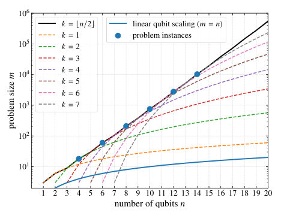
<figcaption class="paper-figure-caption"><b>Fig 1.</b> FIG. 1. Maximum representable problem size m as a func- tion of the number of qubits n for different correlation orders k in Pauli correlation encoding (PCE) [13], where m = 3 n k  . The black solid curve corresponds to k = ⌊n/2⌋, which max- imizes the number of Pauli correlators (i.e., expectation val- ues of Pauli correlation operators). The linear reference line (m = n) indicates direct encodings with one-to-one qubit– variable mapping. Filled markers denote the (n, m) instances considered in this work.</figcaption>
</figure>
<figure class="paper-figure-card">
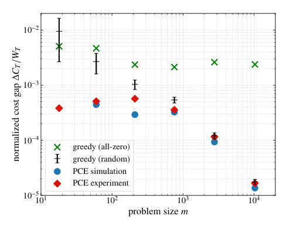
<figcaption class="paper-figure-caption"><b>Fig 2.</b> FIG. 2. Normalized cost gap as a function of the problem size m for the time-averaged portfolio optimization (Model 1). The vertical axis shows the normalized cost gap ∆CT /WT [Eq. (5)]. Crosses [greedy (all-zero)] denote results obtained by the greedy algorithm initialized from the all-zero bit string, while plus markers [greedy (random)] show results averaged over 1,000 runs with independent random initial bit strings; error bars indicate standard deviations over these runs. Cir- cles and diamonds correspond to results obtained using the complete PCE workflow, including greedy post-processing af- ter sign-based decoding, in simulation and on the quantum processing unit (QPU),...</figcaption>
</figure>
<figure class="paper-figure-card">

<figcaption class="paper-figure-caption"><b>Fig 3.</b> Figure 2 shows the normalized cost gap for Model 1 as a function of the problem size m, demonstrating the scal- ability of the PCE-based optimization framework from small to large instances. The corresponding optimiza- tion settings and convergence statistics are summarized in Table I. Across all tested instances, the PCE-based solver achieves consistently low normalized cost gaps, indicat- ing that the proposed encoding and optimization strategy remain effective as the problem size increases. This scal- ability is enabled by the compact representation of vari- ables through Pauli correlation operators, which avoids the linear growth of qubit requirements typical of direct binary encodings....</figcaption>
</figure>
<figure class="paper-figure-card">
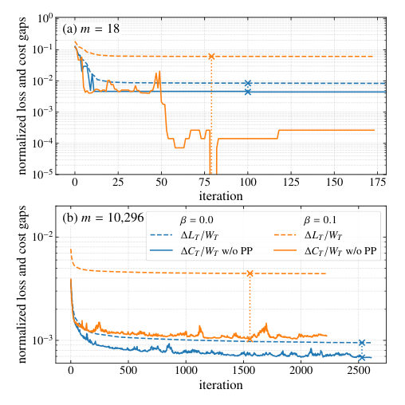
<figcaption class="paper-figure-caption"><b>Fig 4.</b> FIG. 3. Iteration dependence of the normalized loss ∆LT /WT and cost ∆CT /WT gaps (without post-processing, w/o PP). Results are shown for β = 0.0 and 0.1. Panels correspond to (a) m = 18 with αsc = 1.5 (α = 6.0), and (b) m = 10,296 with αsc = 0.1 (α = 274.4). The continuous loss decreases monotonically during optimization, whereas the corresponding decoded binary cost exhibits step-like or irreg- ular, non-monotonic behavior due to the nonlinear discretiza- tion into binary variables. Crosses connected by dotted lines indicate the minimum cost values attained along the opti- mization trajectory, together with the corresponding loss val- ues at the same iterations. For m = 18, the cost...</figcaption>
</figure>
<figure class="paper-figure-card">
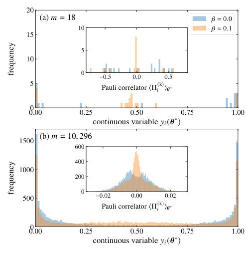
<figcaption class="paper-figure-caption"><b>Fig 5.</b> FIG. 4. Frequency distributions of the sets {yi(θ∗)}m i=1 with yi(θ∗) = ς(2αsc⟨Π(k) i ⟩θ∗). Results are shown for β = 0.0 and 0.1. Panels correspond to (a) m = 18 with αsc = 1.5 (α = 6.0), and (b) m = 10,296 with αsc = 0.1 (α = 274.4). The main panels show the distributions of {yi(θ∗)}m i=1, while the insets display those of the corresponding sets {⟨Π(k) i ⟩θ∗}m i=1. All distributions are evaluated at θ∗, which corresponds to the minimum decoded binary cost in Fig. 3 (without post- processing). All results are obtained from state-vector simu- lations.</figcaption>
</figure>
</div>

<p><strong>Summary.</strong> This paper introduces Pauli Correlation Encoding (PCE), a scalable method to encode large-scale combinatorial optimization problems into quantum circuits using few qubits. By applying this framework to power portfolio optimization, the authors demonstrate near-optimal performance across thousands of variables on both simulation and trapped-ion hardware. PCE offers a qubit-efficient pathway for tackling complex real-world industrial challenges with current NISQ devices.</p>
<p><strong>Why it may be interesting.</strong> The work directly addresses a major bottleneck in quantum computation—scaling up problem size—by proposing a structured encoding (PCE) that maps complex combinatorial constraints onto low-qubit-count expectation values, which is highly relevant for simulating many-body physics or optimization problems.</p>
<details>
<summary>Detailed structure</summary>
<p><strong>Main problem.</strong> The core problem is developing a scalable variational quantum optimization framework for large-scale combinatorial problems, exemplified by electric power demand portfolio optimization.</p>
<p><strong>Main result.</strong> Pauli Correlation Encoding (PCE) provides a qubit-efficient and physically motivated method to encode these large problems, achieving near-optimal performance across massive system sizes ($m=10,296$) on both simulation and trapped-ion hardware.</p>
<p><strong>Method.</strong> The authors use PCE to represent binary variables as expectation values of Pauli correlation operators, enabling a continuous relaxation that is optimized variationally before decoding to discrete solutions.</p>
<p><strong>Model / system.</strong> The application domain is electric power demand portfolio optimization, modeled by QUBO-type objective functions. The quantum implementation utilizes variational circuits parameterized by angles ($   heta$) acting on qubits, and the results are tested on a trapped-ion quantum processor.</p>
<p><strong>Key observables.</strong> Normalized cost gaps (e.g., $10^{-4}$ relative to optimal), Pauli correlators ($\langle\Pi^{(k)}_i
angle$), procured power profiles ($P_t$), and uncertainty coefficients of variation (CV).</p>
<p><strong>Important parameters / regimes.</strong> Problem size $m$ ranges from 18 up to 10,296; correlation order $k$; regularization parameter $eta$.</p>
<p><strong>Assumptions / limitations.</strong> The performance relies on the assumption that improvements in the continuous loss function reliably translate into better discrete solutions, and discrepancies between simulation/QPU are attributed to noise.</p>
<p><strong>Figures summary.</strong> Figures illustrate the scaling of representable problem size ($m$ vs $n$), histograms showing correlator distributions transitioning from discrete peaks (small $m$) to continuous structures (large $m$), and time-series plots comparing PCE results against greedy baselines for power procurement profiles.</p>
<p><strong>Paper structure.</strong> The paper introduces PCE as a scalable framework, applies it to the two-stage hybrid optimization model (time-averaged initialization followed by time-resolved refinement), validates performance across large scales ($m=18$ to $10,296$), and demonstrates robustness on physical hardware.</p>
</details>
<details>
<summary>Abstract</summary>
<p>Variational quantum algorithms offer a promising route to combinatorial optimization, but their applicability is limited by the challenge of encoding large-scale problems within restricted qubit resources. In this work, we introduce a scalable variational framework based on Pauli correlation encoding (PCE) and apply it to electric power demand portfolio optimization. Binary variables are represented through expectation values of Pauli correlation operators, which encode multi-body correlations of the quantum state and provide a continuous relaxation enabling compact representations with few qubits. We further propose a two-stage hybrid formulation, in which a time-averaged problem provides initialization for a time-resolved optimization. Numerical simulations demonstrate near-optimal performance across problem sizes ranging from $m$=18 to 10,296, with normalized cost gaps on the order of $10^{-4}$ relative to solutions with certified optimality. We show that the performance is governed by the interplay between continuous relaxation and discretization: the effective resolution of the correlator representation determines how reliably improvements in the continuous loss translate into better discrete solutions, with larger systems exhibiting more consistent behavior. Finally, we demonstrate robustness on a trapped-ion quantum processor, where high-quality solutions are obtained despite noise and finite sampling. These results establish PCE as a physically motivated and qubit-efficient framework for large-scale combinatorial optimization.</p>
</details>
<p><sub><a href="#top">↑ back to top</a></sub></p>

<p><a id="paper-2607.23988"></a></p>
<h3 id="scaling-a-cuda-q-gqe-qsci-pipeline-to-40-qubits-for-euv-photoresist-chemistry"><a href="http://arxiv.org/abs/2607.23988v1">Scaling a CUDA-Q GQE + QSCI pipeline to 40 qubits for EUV photoresist chemistry</a></h3>
<p><strong>Authors:</strong> Karim Elgammal, Marc Maußner<br>
<strong>Type:</strong> both · <strong>Category:</strong> strongly correlated electrons · <strong>PDF:</strong> <a href="https://arxiv.org/pdf/2607.23988v1">https://arxiv.org/pdf/2607.23988v1</a><br>
<strong>Analysis basis:</strong> full PDF text, analyzed in chunks
<strong>Topic relevance:</strong> <code>QC/QI experiment</code> <strong>1/5</strong></p>
<div class="figure-strip-hint">↔ Scroll figures horizontally</div>
<div class="paper-figures-scroll">
<figure class="paper-figure-card">
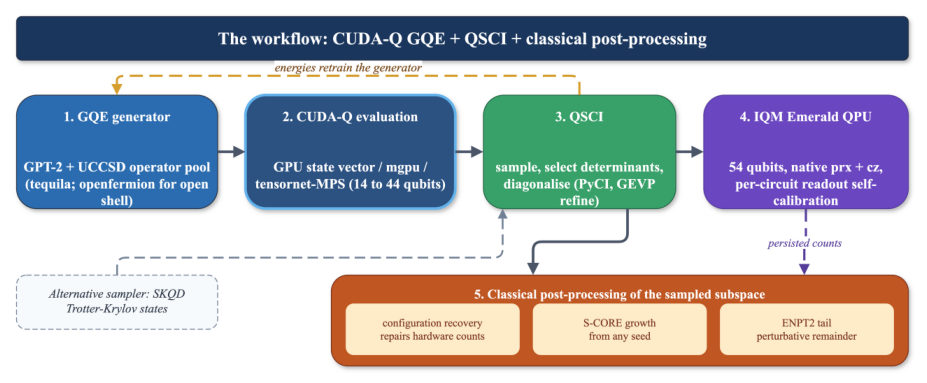
<figcaption class="paper-figure-caption"><b>Fig 1.</b> Figure 1: The hybrid system. GPT-2 policy (GPU) → CUDA-Q circuit sampling (single-GPU fp32 statevector to 32q; pooled 4-GPU mgpu at 34q via a persistent containerised worker; tensornet-mps at 40q; real IQM Emerald via the native iqm target) → classical QSCI diagonalisation and GEVP refinement → loss update, with classical post-processing of the sampled subspace (details in Table 1).</figcaption>
</figure>
<figure class="paper-figure-card">
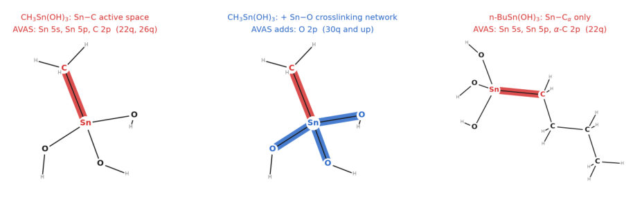
<figcaption class="paper-figure-caption"><b>Fig 2.</b> Figure 2: The AVAS active-space regions, tinted as in Table 1. Left and centre, the resist CH3Sn(OH)3: the Sn-C space, the EUV solubility switch (AVAS Sn 5s, Sn 5p, C 2p; 22q and 26q), then the added Sn-O crosslinking network (+O 2p; 30q and up). Right, the industrial ligand n-BuSn(OH)3: its AVAS label is atom-indexed on the alpha carbon, so the rest of the chain stays outside the active space and the ligand occupies the same (14e,11o) space at 22q as the methyl resist, the one rung at which it is run.</figcaption>
</figure>
<figure class="paper-figure-card">
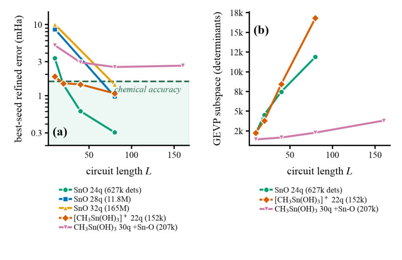
<figcaption class="paper-figure-caption"><b>Fig 3.</b> Figure 3: Circuit depth closes the scaling gap (best seed, fixed 200-iteration budget and determinant cap; GEVP-refined error against each system’s exact CASCI). (a) Error falls with the generated-operator count 𝐿: the SnO 24, 28 and 32q rungs enter the chemical-accuracy band (shaded) from 3.36, 8.64 and 10.06 mHa at 𝐿 = 10. (b) Mechanism: the cross-circuit GEVP subspace grows near-linearly with 𝐿; the resist’s concentrated 24-electron wavefunction grows an order of magnitude more slowly, the origin of its saturation (broken at 𝐿 = 600, see text).</figcaption>
</figure>
<figure class="paper-figure-card">
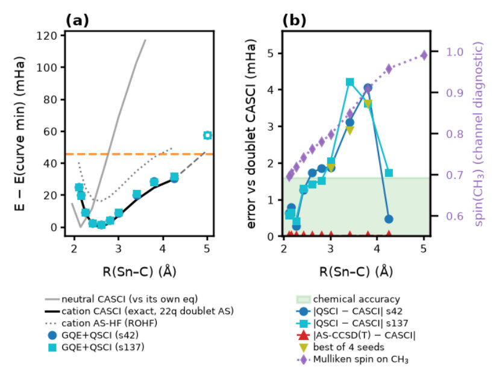
<figcaption class="paper-figure-caption"><b>Fig 4.</b> Figure 4: The EUV switch in CH3Sn(OH)3 at 22 qubits. (a) The radical cation’s Sn-C dissociation surface: GEVP-refined QSCI energies ride the exact doublet CASCI curve out to 4.25 Å, two thirds of the way to the asymptote; the neutral curve (grey) is far steeper, and the dashed orange line is the CH3 radical plus charged Sn(OH)3 frozen-fragment gap at UCCSD(T). Ionisation collapses the classical UCCSD(T) bond-dissociation energy from 72.6 to 21.2 kcal/mol. (b) Per-point error against the chemical-accuracy band, with the active-space CCSD(T) deviation, the best of four seeds where run, and the Mulliken spin on CH3 (right axis) tracking the channel. The open markers and dashed segment at 5.0 Å...</figcaption>
</figure>
</div>

<p><strong>Summary.</strong> The authors present a scalable quantum pipeline combining GQE and QSCI to simulate complex bond chemistry in EUV photoresists up to 40 qubits. By leveraging circuit depth as the scaling mechanism, they achieve chemical accuracy benchmarks against exact methods. This work is significant for demonstrating near-term quantum computation's potential in materials informatics.</p>
<p><strong>Why it may be interesting.</strong> This work pushes the boundaries of simulating strongly correlated electronic structure problems relevant to materials science, using quantum machine learning techniques (GPT-2 policy) to manage exponentially large Hilbert spaces on near-term hardware.</p>
<details>
<summary>Detailed structure</summary>
<p><strong>Main problem.</strong> The study addresses simulating bond-breaking chemistry in EUV photoresist materials, which requires methods beyond single-determinant approximations due to multireference character.</p>
<p><strong>Main result.</strong> The developed quantum pipeline successfully scales calculations up to 40 qubits while maintaining chemical accuracy for key molecular fragments relevant to lithography. The method demonstrates that circuit depth, rather than training length, is the primary scaling lever.</p>
<p><strong>Method.</strong> A hybrid computational approach coupling a Generative Quantum Eigensolver (GQE) with Quantum-Selected Configuration Interaction (QSCI), implemented on CUDA-Q and tested on real quantum hardware.</p>
<p><strong>Model / system.</strong> The system models EUV photoresist chemistry, specifically methyltin trihydroxide and n-butyltin trihydroxide, using active spaces ranging from 14 to 44 qubits. Reference calculations are benchmarked against exact CASCI or FCI results for smaller fragments like SnO.</p>
<p><strong>Key observables.</strong> Energy error (in mHa), bond dissociation energy changes upon ionization, and the size of the refined quantum subspace relative to the total determinant space.</p>
<p><strong>Important parameters / regimes.</strong> Qubit count (scaling from 14 to 40 qubits), circuit depth ($L$), and chemical accuracy targets ($\le 1.6 	ext{ mHa}$).</p>
<p><strong>Assumptions / limitations.</strong> The full trained ansatz on hardware awaits better fidelities, and the boundary beyond $\sim 32$ qubits is currently mapped by classical subspace expansion rather than quantum mechanical breakthrough.</p>
<p><strong>Figures summary.</strong> Figures illustrate Active Space Projection (AVAS) regions for both resists, while tables detail error metrics across various qubit rungs comparing GQE+QSCI against other methods.</p>
<p><strong>Paper structure.</strong> The paper progresses by establishing the chemical problem, detailing the hybrid quantum-classical pipeline (GQE $
ightarrow$ QSCI), demonstrating successful scaling and accuracy benchmarks on smaller systems ($    ext{SnO}$), and finally applying this to complex resist chemistry up to 40 qubits.</p>
</details>
<details>
<summary>Abstract</summary>
<p>We scale a CUDA-Q-native pipeline coupling a generative quantum eigensolver (GQE) to quantum-selected configuration interaction (QSCI) across active spaces of 14 to 44 qubits, applied to the extreme-ultraviolet (EUV) photoresist chemistry of monoalkyltin oxo-hydroxides. A GPT-2 policy emits UCCSD operator sequences; sampled bitstrings become determinants, diagonalised classically, and a cross-circuit generalised-eigenvalue refinement makes every reported GQE+QSCI energy a variational upper bound. Every rung from 14 to 40 qubits carries an exact CASCI or FCI reference, up to 166 million determinants for SnO at 32 qubits. The pipeline is chemically accurate, below 1.6 mHa, through 30 qubits on methyltin trihydroxide and through 32 on SnO, on the best seed at the top rungs. Circuit depth rather than training length is the scaling lever; the refined subspace grows near-linearly with the operator count while staying a vanishing fraction of the determinant space, 0.017% at the 32-qubit SnO rung. It also runs on the 54-qubit IQM Emerald processor, at the shallow depths its routed two-qubit gates allow, reaching +0.330 mHa for SnO at 14 qubits from a CCSD-amplitude-ordered pool prefix and +3.92 mHa for the industrial n-butyltin ligand at 22 qubits from depth-truncated trained circuits under per-circuit readout self-calibration, 81% of the active-space correlation; classical configuration recovery on those counts tightens the 22-qubit result to +0.18 to 0.21 mHa. For the methyl resist, ionisation collapses the classical UCCSD(T) Sn-C bond dissociation energy from 72.6 to 21.2 kcal/mol, the switch that flips solubility on exposure. Against that, the 40-qubit result is support-limited at 22.8 mHa, the full trained ansatz on hardware awaits better fidelities, and classical subspace expansion reaches the 32 to 40-qubit spaces with no quantum sampler, so that boundary is mapped, not beaten.</p>
</details>
<p><sub><a href="#top">↑ back to top</a></sub></p>

<p><a id="paper-2607.24474"></a></p>
<h3 id="the-bare-necessities-of-a-physically-reasonable-mathematical-model-for-quantum-theory"><a href="http://arxiv.org/abs/2607.24474v1">The bare necessities of a physically reasonable mathematical model for quantum theory</a></h3>
<p><strong>Authors:</strong> Gerd Niestegge<br>
<strong>Type:</strong> theory · <strong>Category:</strong> other · <strong>PDF:</strong> <a href="https://arxiv.org/pdf/2607.24474v1">https://arxiv.org/pdf/2607.24474v1</a><br>
<strong>Analysis basis:</strong> full PDF text, analyzed in chunks
<strong>Topic relevance:</strong> <code>quantum measurements</code> <strong>1/5</strong></p>
<div class="figure-strip-hint">↔ Scroll figures horizontally</div>
<div class="paper-figures-scroll">
<figure class="paper-figure-card">
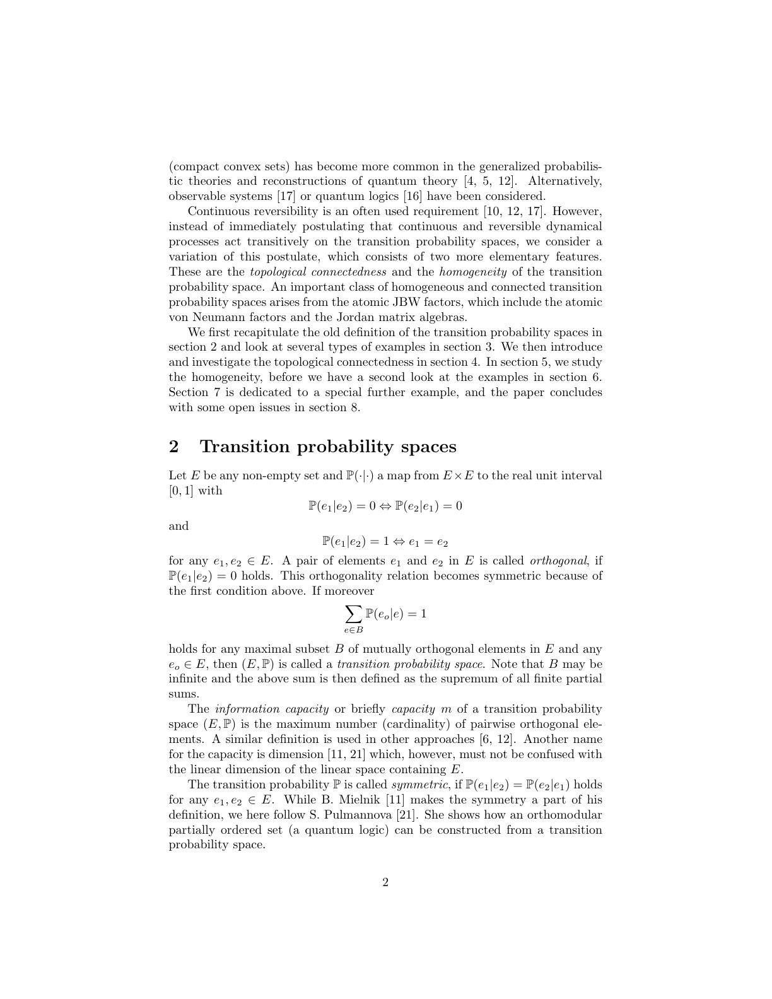
<figcaption class="paper-figure-caption"><b>Fig 1.</b> Low-resolution page preview, page 2</figcaption>
</figure>
<figure class="paper-figure-card">

<figcaption class="paper-figure-caption"><b>Fig 2.</b> Low-resolution page preview, page 3</figcaption>
</figure>
<figure class="paper-figure-card">

<figcaption class="paper-figure-caption"><b>Fig 3.</b> Low-resolution page preview, page 4</figcaption>
</figure>
<figure class="paper-figure-card">

<figcaption class="paper-figure-caption"><b>Fig 4.</b> Low-resolution page preview, page 5</figcaption>
</figure>
<figure class="paper-figure-card">

<figcaption class="paper-figure-caption"><b>Fig 5.</b> Low-resolution page preview, page 6</figcaption>
</figure>
</div>

<p><strong>Summary.</strong> This theoretical paper investigates the fundamental mathematical requirements for a consistent theory of quantum mechanics by analyzing its transition probability spaces. It proposes that three key features—transition probabilities, continuous dynamics, and topological homogeneity—must be present in any physically valid model. The work connects these abstract requirements to known algebraic structures like JBW factors and exceptional Lie groups.</p>
<p><strong>Why it may be interesting.</strong> This work tackles the foundational axioms of quantum mechanics, which underpins all applications in AMO physics. Understanding the necessary mathematical structure provides deep insight into what physical principles must govern measurement and evolution.</p>
<details>
<summary>Detailed structure</summary>
<p><strong>Main problem.</strong> The core problem is determining the minimal set of mathematical features required for a physically reasonable formulation of quantum theory, as its foundational basis remains mysterious.</p>
<p><strong>Main result.</strong> The paper suggests that such models must possess transition probabilities, continuous reversible dynamics acting transitively, and topological homogeneity. These constraints lead to structures related to atomic JBW factors or specific exceptional Lie group actions like E6.</p>
<p><strong>Method.</strong> The analysis involves abstract mathematical characterization of 'transition probability spaces' (E, P), examining their algebraic structure via Jordan algebras, and analyzing symmetry groups acting on these spaces.</p>
<p><strong>Model / system.</strong> The model is the general formalism of quantum theory itself, analyzed through its transition probabilities. Specific mathematical realizations include atomic JBW factors, von Neumann factors, and models associated with convex sets or exceptional Lie groups like E6.</p>
<p><strong>Key observables.</strong> Transition probabilities P(e1|e2), capacity (m), connectedness, and homogeneity of the state space.</p>
<p><strong>Important parameters / regimes.</strong> The dimension of the underlying algebra, the structure group acting on the space (e.g., SO(n) or E6).</p>
<p><strong>Assumptions / limitations.</strong> It assumes that a physically reasonable model must satisfy three specific mathematical criteria: transition probabilities, continuous reversible dynamics, and topological homogeneity.</p>
<p><strong>Paper structure.</strong> The paper progresses by defining the necessary features (transition probabilities + dynamics/topology) and then reviewing known mathematical structures—such as JBW factors and models based on convex sets—that satisfy these criteria. It concludes by listing open classification problems.</p>
</details>
<details>
<summary>Abstract</summary>
<p>The physical foundation of the mathematical formalism of quantum theory is still an iffy mystery. Here it is presumed that a physically reasonable mathematical model needs only three basic features. The first one are the transition probabilities, which are so typical of quantum theory. The other two constitute a variation of the postulate that continuous reversible dynamical processes exist and act transitively on the underlying space. One class of mathematical models with these features arises from the atomic JBW factors, which include the atomic von Neumann factors and become identical with the Jordan matrix algebras, when the dimension is finite. A further model is known, on which the exceptional Lie group E6 acts transitively. Interestingly, E6 is sometimes considered a candidate for internal symmetries in particle physics, but many familiar features of quantum theory get lost in this case (particularly the general existence of post-measurement states). The paper concludes with some open issues, concerning this problem and the classification of the mathematical structures with the three features.</p>
</details>
<p><sub><a href="#top">↑ back to top</a></sub></p>

<p><a id="paper-2607.24065"></a></p>
<h3 id="variational-quantum-conditional-boltzmann-machines-for-time-series-forecasting-architectures-symmetric-hyperparameter-evaluation-and-a-nonlinear-benchmark"><a href="http://arxiv.org/abs/2607.24065v1">Variational Quantum Conditional Boltzmann Machines for Time-Series Forecasting: Architectures, Symmetric Hyperparameter Evaluation, and a Nonlinear Benchmark</a></h3>
<p><strong>Authors:</strong> Gerhard Hellstern, Danyal Maheshwari, Martin Zaefferer, Martin Braun, Tanja Döhler<br>
<strong>Type:</strong> both · <strong>Category:</strong> disordered systems and neural networks · <strong>PDF:</strong> <a href="https://arxiv.org/pdf/2607.24065v1">https://arxiv.org/pdf/2607.24065v1</a><br>
<strong>Analysis basis:</strong> full PDF text, analyzed in chunks
<strong>Topic relevance:</strong> <code>methods for driven-dissipative</code> <strong>1/5</strong></p>
<div class="figure-strip-hint">↔ Scroll figures horizontally</div>
<div class="paper-figures-scroll">
<figure class="paper-figure-card">

<figcaption class="paper-figure-caption"><b>Fig 1.</b> Figure 1: Exp. 1: RMSE heatmap (H, σ) for GP (left) and NARMA-10 (right) and mean values of k.</figcaption>
</figure>
<figure class="paper-figure-card">

<figcaption class="paper-figure-caption"><b>Fig 2.</b> Figure 2: Exp. 2: Mean RMSE by model for GP (left) and NARMA-10 (right). Error bars: ±1 SD across n=12 paired observations. Holm-corrected significance vs. CRBM(H∗): ∗p&lt;0.05, ∗∗p&lt;0.01, ∗∗∗p&lt;0.001 (e.g. QQRBM on GP, padj=0.024, is marked ∗). GP RMSE in raw units; NARMA-10 in raw (unstandardised) units. On NARMA-10 the horizontal references mark the mean-predictor σ(y)=0.109, the linear-window asymptote 0.064, and the empirical nonlinear-window floor 0.056: the top models sit at the nonlinear floor, while QQRBM reaches mean-predictor level.</figcaption>
</figure>
<figure class="paper-figure-card">

<figcaption class="paper-figure-caption"><b>Fig 3.</b> Figure 3: Exp. 3: RMSE vs. L and ∥αh∥2 vs. L for GP (top) and NARMA-10 (bottom).</figcaption>
</figure>
<figure class="paper-figure-card">

<figcaption class="paper-figure-caption"><b>Fig 4.</b> Figure 4: Exp. 4: RMSE vs. H for GP (left) and NARMA-10 (right).</figcaption>
</figure>
<figure class="paper-figure-card">

<figcaption class="paper-figure-caption"><b>Fig 5.</b> Figure 5: Exp. 5: Ablation RMSE for GP (left) and NARMA-10 (right).</figcaption>
</figure>
</div>

<p><strong>Summary.</strong> This paper rigorously compares Variational Quantum Conditional Boltzmann Machines against classical counterparts for time-series forecasting. Using extensive symmetric hyperparameter optimization across two datasets, the authors conclude that no definitive quantum advantage exists at current sample sizes. The best performance was consistently achieved by the strongest classical baseline model.</p>
<p><strong>Why it may be interesting.</strong> While focused on ML, the rigorous comparison between classical and quantum computational resources for complex time-series modeling touches upon the fundamental limits of computation in physical systems, which is relevant to understanding resource scaling in quantum simulation.</p>
<details>
<summary>Detailed structure</summary>
<p><strong>Main problem.</strong> The study compares classical energy-based models with quantum enhancements for time-series forecasting, aiming to find evidence of a quantum advantage.</p>
<p><strong>Main result.</strong> No systematic evidence of a quantum advantage was found; the hybrid quantum architecture performed statistically indistinguishably from the best classical baseline across multiple rigorous tests.</p>
<p><strong>Method.</strong> The authors developed and evaluated four Variational Quantum Conditional Boltzmann Machine architectures using symmetric hyperparameter optimization on two distinct data benchmarks (GP and NARMA-10).</p>
<p><strong>Model / system.</strong> The core models are VQCBMs, including classical CRBM, hybrid QCRBM, full-register QQRBM, and lag-feature QFeatureQRBM. These build upon energy-based modeling principles for time-series prediction.</p>
<p><strong>Key observables.</strong> Predictive accuracy measured by Normalized Root Mean Square Error (NRMSE) and $R^2$ across various budget constraints.</p>
<p><strong>Important parameters / regimes.</strong> Sample size ($n=12$), hyperparameter budgets ($P \in\{84, 120, 156, 192\}$), and circuit depth/layers ($L_Q$).</p>
<p><strong>Assumptions / limitations.</strong> The comparison is limited by the available sample size, and the quantum path optimization was performed on a soft surrogate reconstruction loss rather than directly on the forecast objective.</p>
<p><strong>Figures summary.</strong> Not specified in detail, but comparisons are made across various model classes (e.g., CRBM vs QCRBM) using NRMSE/R^2 tables for NARMA-10 and GP datasets.</p>
<p><strong>Paper structure.</strong> The paper introduces the VQCBM architectures, details the derivations of conditional distributions and gradients, performs comprehensive symmetric hyperparameter optimization across 13 experiments on two data regimes, and concludes with performance comparisons under matched-budget analysis.</p>
</details>
<details>
<summary>Abstract</summary>
<p>In this study, we developed and evaluated four conditional energy-based forecasting architectures: a classical Gaussian-Bernoulli CRBM, a hybrid quantum-classical QCRBM, a full-register QQRBM, and a lag-feature QFeatureQRBM with complete derivations of their conditional distributions, Contrastive-Divergence gradients, and hybrid training, bridging the energy-based formulation and the implementation-level quantum computation. Unlike prior comparisons, our evaluation enforces symmetric hyperparameter optimisation: classical and quantum-specific hyperparameters receive an equally thorough grid search across thirteen structured experiments. We test on two data classes, a Gaussian-process dataset (GP) generated with real financial data and the input-driven NARMA-10 nonlinear benchmark. Across both regimes we find no systematic evidence of a quantum advantage at the available sample size: no quantum architecture improves on the best classical baseline. The fully quantum QQRBM and QFeatureQRBM are significantly worse, whereas the hybrid QCRBM is statistically indistinguishable from the strongest classical CRBM on both datasets. A power analysis bounds this null result: at n = 12 only medium-to-large effects are detectable, so small advantages cannot be excluded. An iso-parameter (matched-budget) comparison reaches the same conclusion: the classical CRBM is lowest at three of the four budgets and no CRBM-vs-QCRBM difference is significant at any budget.</p>
</details>
<p><sub><a href="#top">↑ back to top</a></sub></p>
<h2 id="other-papers-11">Other papers (11)</h2>
<p><em>Papers from primary archives without highlighted authors or any topic match. Click to expand.</em></p>
<details>
<summary>Show other papers</summary>

<p><a id="paper-2607.24581"></a></p>
<h3 id="a-quantitative-framework-for-comparing-classical-and-quantum-algorithms-for-the-traveling-salesman-problem"><a href="http://arxiv.org/abs/2607.24581v1">A Quantitative Framework for Comparing Classical and Quantum Algorithms for the Traveling Salesman Problem</a></h3>
<p><strong>Authors:</strong> Krit Grover, Marcelo Ponce<br>
<strong>Type:</strong> both · <strong>Category:</strong> quantum information and computing · <strong>PDF:</strong> <a href="https://arxiv.org/pdf/2607.24581v1">https://arxiv.org/pdf/2607.24581v1</a><br>
<strong>Analysis basis:</strong> full PDF text, analyzed in chunks</p>
<div class="figure-strip-hint">↔ Scroll figures horizontally</div>
<div class="paper-figures-scroll">
<figure class="paper-figure-card">

<figcaption class="paper-figure-caption"><b>Fig 1.</b> Figure 2: Approximation ratios (𝐶alg/𝐶opt) versus number of cities (fully connected) for each algorithm on instances where the optimum was available from brute force.</figcaption>
</figure>
<figure class="paper-figure-card">

<figcaption class="paper-figure-caption"><b>Fig 2.</b> Figure 1: Execution time (log scale) versus number of cities (fully connected) for each algorithm.</figcaption>
</figure>
<figure class="paper-figure-card">

<figcaption class="paper-figure-caption"><b>Fig 3.</b> Figure 3: Peak memory usage (log scale) versus number of cities (fully connected) for each algorithm.</figcaption>
</figure>
<figure class="paper-figure-card">

<figcaption class="paper-figure-caption"><b>Fig 4.</b> Figure 4: Paths found by each algorithm on a 5-city, fully connected graph.</figcaption>
</figure>
</div>
<p><strong>Summary.</strong> This work quantitatively compares classical heuristics (like Simulated Annealing) against the QAOA algorithm for solving the TSP. The empirical results show that while QAOA can achieve optimal solutions on small instances, its computational overhead and scalability issues currently render it non-competitive with optimized classical methods. This highlights the need for better problem mappings or hardware improvements for quantum optimization algorithms.</p>
<p><strong>Why it may be interesting.</strong> It provides concrete, performance-based benchmarks for applying variational quantum algorithms to a notoriously hard combinatorial optimization problem, directly addressing near-term quantum advantage claims in optimization.</p>
<details>
<summary>Detailed structure</summary>
<p><strong>Main problem.</strong> The paper compares classical heuristics (like Simulated Annealing) against quantum algorithms (QAOA) for solving the NP-hard Traveling Salesman Problem (TSP).</p>
<p><strong>Main result.</strong> Optimized classical heuristics, particularly Simulated Annealing, demonstrated superior scalability and solution quality compared to current implementations of QAOA on small graphs.</p>
<p><strong>Method.</strong> The study involves implementing and comparing four distinct solvers: brute force, MST approximation, SA, and the variational quantum algorithm QAOA. Performance is evaluated empirically across varying graph sizes.</p>
<p><strong>Model / system.</strong> The problem is modeled as finding the minimum cost Hamiltonian cycle on a weighted graph. For QAOA, this requires mapping the TSP to a QUBO formulation using specific cost and mixing Hamiltonians.</p>
<p><strong>Key observables.</strong> Execution time vs. problem size, solution quality (approximation ratio), and peak memory usage are the primary diagnostics used for comparison.</p>
<p><strong>Important parameters / regimes.</strong> For QAOA, key parameters include the number of layers ($p$) and the Trotter step count ($  ext{num_approx}$). For SA, the cooling schedule rate is critical.</p>
<p><strong>Assumptions / limitations.</strong> The analysis assumes that current classical simulation resources limit exact quantum evolution to very small systems ($n \le 5$), while QAOA's complexity is bottlenecked by classical precomputation and state vector size.</p>
<p><strong>Figures summary.</strong> Figures illustrate the exponential time growth of brute-force methods, polynomial scaling for SA/MST, and sharp increases in runtime/memory for QAOA due to overhead.</p>
<p><strong>Paper structure.</strong> The paper follows a comparative structure: first establishing classical baselines (Brute Force, MST, SA), then detailing the quantum approach (QAOA Hamiltonian formulation), and finally presenting empirical results comparing all methods across time, quality, and memory metrics.</p>
</details>
<details>
<summary>Abstract</summary>
<p>The Traveling Salesman Problem is a classical NP-hard problem with significant implications in logistics, circuit design, and operations research. This paper presents a comparative study of four approaches to solving the Traveling Salesman Problem: brute-force enumeration, a 2-approximation algorithm using minimum spanning trees, simulated annealing, and the Quantum Approximate Optimization Algorithm. We implement each technique and evaluate them on graphs of varying sizes to analyze performance, solution quality, and scalability. In doing so, we have also developed an open-source framework that allows researchers and practitioners to explore, test and extend these methods.</p>
</details>
<p><sub><a href="#top">↑ back to top</a></sub></p>

<p><a id="paper-2607.23727"></a></p>
<h3 id="can-pce-solve-the-factorisation-problem-via-optimisation"><a href="http://arxiv.org/abs/2607.23727v1">Can PCE solve the factorisation problem via optimisation?</a></h3>
<p><strong>Authors:</strong> Fernando Alonso, Colomán Samprón, Jacobo Veiga, Andrés Gómez<br>
<strong>Type:</strong> theory · <strong>Category:</strong> quantum information and computing · <strong>PDF:</strong> <a href="https://arxiv.org/pdf/2607.23727v1">https://arxiv.org/pdf/2607.23727v1</a><br>
<strong>Analysis basis:</strong> full PDF text, analyzed in chunks</p>
<div class="figure-strip-hint">↔ Scroll figures horizontally</div>
<div class="paper-figures-scroll">
<figure class="paper-figure-card">

<figcaption class="paper-figure-caption"><b>Fig 1.</b> Figure 1: Schematic of the quantum circuit used to construct the PQC.</figcaption>
</figure>
<figure class="paper-figure-card">

<figcaption class="paper-figure-caption"><b>Fig 2.</b> Figure 2: Scaling of the number of qubits as a function of the number of bits.</figcaption>
</figure>
<figure class="paper-figure-card">

<figcaption class="paper-figure-caption"><b>Fig 3.</b> Figure 3: Scaling of the ideal circuit depth and resultant number of parameters as a function of the number of bits.</figcaption>
</figure>
<figure class="paper-figure-card">

<figcaption class="paper-figure-caption"><b>Fig 4.</b> Figure 4: Factorisation success and trivial solution rates as a function of the number of bits, for different compression orders k and optimisers, over 50 random initialisations.</figcaption>
</figure>
<figure class="paper-figure-card">

<figcaption class="paper-figure-caption"><b>Fig 5.</b> Figure 5: Scaling of the number of qubits as a function of the number of bits.</figcaption>
</figure>
</div>
<p><strong>Summary.</strong> This paper investigates using the Pauli Correlation Encoding (PCE) algorithm as a potential method to solve the computationally hard integer factorisation problem on near-term quantum hardware. By reformulating factorisation as an optimization task, the authors aim to drastically reduce the required number of qubits compared to existing variational approaches. The work serves as an exploratory study into the feasibility and limitations of this encoding for quantum computation.</p>
<p><strong>Why it may be interesting.</strong> While focused on number theory, the exploration of resource reduction via novel encodings like PCE is highly relevant to quantum information science, particularly in developing scalable algorithms for hard optimization problems that might interface with AMO systems or complex Hamiltonian simulations.</p>
<details>
<summary>Detailed structure</summary>
<p><strong>Main problem.</strong> The paper addresses the integer factorisation problem, which is cryptographically relevant (e.g., RSA), by reformulating it as a binary optimisation problem suitable for quantum computation.</p>
<p><strong>Main result.</strong> The authors propose adapting the Pauli Correlation Encoding (PCE) algorithm to reduce the qubit requirements for solving factorisation via optimization compared to standard variational approaches.</p>
<p><strong>Method.</strong> The core method involves encoding the factorisation constraints into an optimization cost function and then attempting to solve this minimization problem using the PCE framework within a quantum computational setting.</p>
<p><strong>Model / system.</strong> The focus is on theoretical quantum computation models, specifically utilizing Variational Quantum Algorithms (VQAs) and adapting the Pauli Correlation Encoding (PCE) technique. The underlying mathematical structure relates to finding factors $p$ and $q$ such that $N=pq$.</p>
<p><strong>Key observables.</strong> The global minimum of the cost function $L$, which corresponds to a valid factorisation, and the required number of qubits for encoding.</p>
<p><strong>Important parameters / regimes.</strong> Qubit count scaling (PCE aims for reduction), circuit depth, variational parameters, and the size/bit-length ($m$) of the integer $N$.</p>
<p><strong>Assumptions / limitations.</strong> The study provides a preliminary examination; no computational advantage is claimed over established methods, and limitations regarding NISQ hardware are acknowledged.</p>
<p><strong>Paper structure.</strong> The paper details formulating factorisation as an optimization problem (classical/quantum), describing the PCE methodology for encoding, and implementing this approach using different strategies (Basic and DoTS). Future work involves exploring advanced ansatzes and warm-start techniques.</p>
</details>
<details>
<summary>Abstract</summary>
<p>The ongoing progress in quantum technologies has fueled a sustained exploration of their potential applications across various domains, particularly in computational problems that are considered intractable for classical systems. Among these problems, integer factorisation remains of special interest due to its relevance to widely used cryptographic schemes such as RSA. Among the different possibilities, one approach to factorisation is to convert the problem into a binary optimisation problem. However, current proposals usually need a large number of qubits that make them unfeasible within the current hardware. In this work, we investigate a possible adaptation of the Pauli Correlation Encoding (PCE) algorithm to the factorisation problem. Due to its compression capability, it can drastically reduce the number of needed qubits. The proposed approach explores how the structure and dynamics of the PCE framework may be employed to encode and analyze candidate factor relations within a quantum computational setting. Rather than presenting a replacement for established quantum factorisation methods, this study aims to provide a preliminary examination of the feasibility and limitations of the proposed adaptation. We discuss the algorithmic design, its conceptual relationship with existing quantum approaches, and the practical constraints associated with implementation on current or near-term quantum hardware. Initial observations suggest that the method may offer an alternative perspective for studying factorisation within the broader context of quantum computation, although no claim is made regarding computational advantage. These results are intended primarily as an exploratory contribution to ongoing research in quantum algorithms and computational number theory.</p>
</details>
<p><sub><a href="#top">↑ back to top</a></sub></p>

<p><a id="paper-2607.24658"></a></p>
<h3 id="exact-and-fixed-point-grover-search-with-qudits"><a href="http://arxiv.org/abs/2607.24658v1">Exact and Fixed-Point Grover Search with Qudits</a></h3>
<p><strong>Authors:</strong> Tanay Roy<br>
<strong>Type:</strong> theory · <strong>Category:</strong> quantum information and computing · <strong>PDF:</strong> <a href="https://arxiv.org/pdf/2607.24658v1">https://arxiv.org/pdf/2607.24658v1</a><br>
<strong>Analysis basis:</strong> full PDF text, analyzed in chunks</p>
<div class="figure-strip-hint">↔ Scroll figures horizontally</div>
<div class="paper-figures-scroll">
<figure class="paper-figure-card">

<figcaption class="paper-figure-caption"><b>Fig 1.</b> FIG. 1. Generic Grover search with qudits. (a) Effective two-level description on the Bloch sphere spanned by the collective unmarked state |R⟩and target state |T⟩. The oracle So(α) applies a phase to the target subspace, while the diffusion operator Sr(β) rotates the state about the initial-state axis |ψ0⟩. For the standard choice α = β = π, the trajectory remains in the ZX plane and generally ends near, but not exactly at, |T⟩. (b) Standard circuit structure with n qubits: prepare |ψ0⟩, apply kopt oracle–diffusion iterations, and measure the register. (c) Heterogeneous qudit implementation in which the blue layer denotes a generic multi-qudit controlled-phase operation with an arbitrary...</figcaption>
</figure>
<figure class="paper-figure-card">

<figcaption class="paper-figure-caption"><b>Fig 2.</b> FIG. 2. Decomposition of a multi-controlled qudit CPHASE(θ) gate for qudits with identical prime dimension d. (a) The decomposition involves two-qudit CSUM† gates and CPHASE(θ) gates with fewer controls. (b) Decomposition of the two-qudit CPHASE(θ) gate (top). The bottom panel shows the identity CSUM† = CSUMd−1 and the single-qudit phase gate acting on basis state |0⟩.</figcaption>
</figure>
<figure class="paper-figure-card">

<figcaption class="paper-figure-caption"><b>Fig 3.</b> FIG. 3. Comparison of quantum search protocols. Bloch-sphere trajectories illustrate how different phase choices steer the state toward the target state: (a) standard Grover search (red circles) and the one-parameter deterministic protocol D1p (blue diamonds), (b) the two-parameter D2p (green diamonds) and three-parameter D3p (magenta circles) deterministic protocols, and (c) the π/3 (brown diamonds) and YLC (blue circles) fixed-point (FP) protocols. The initial state |ψ0⟩is prepared with λ = 0.005. (d) Oracle-query counts versus target-state fraction λ for deterministic and fixed-point searches. Solid and dashed fixed-point curves correspond to success-probability thresholds of 0.99 and...</figcaption>
</figure>
</div>
<p><strong>Summary.</strong> This paper develops a comprehensive framework to adapt Grover's search algorithm for quantum processors using qudits, moving beyond the traditional qubit model. It introduces advanced phase-matching techniques to ensure deterministic success probabilities and provides explicit circuit decompositions suitable for various hardware platforms. This advances the practical application of quantum search in multilevel quantum systems.</p>
<p><strong>Why it may be interesting.</strong> This work is highly relevant as it provides concrete, hardware-oriented protocols for quantum algorithms on multilevel systems. The focus on phase matching to achieve deterministic results moves beyond idealized theoretical bounds toward practical circuit implementation suitable for platforms like trapped ions or superconducting circuits that naturally support qudits.</p>
<details>
<summary>Detailed structure</summary>
<p><strong>Main problem.</strong> The primary goal is generalizing Grover's search algorithm from standard qubits to qudits (systems with dimension &gt; 2) and handling heterogeneous qudit registers.</p>
<p><strong>Main result.</strong> The authors present a unified framework for qudit-based Grover search, detailing deterministic phase-matched protocols that ensure exact success probabilities, alongside explicit circuit decompositions for hardware implementation.</p>
<p><strong>Method.</strong> The methodology involves deriving generalized oracle and diffusion operators for qudits, analyzing the system's evolution on an effective two-dimensional subspace (Bloch sphere mapping), and employing advanced phase-matching techniques to achieve deterministic search counts ($k_{	ext{certain}}$).</p>
<p><strong>Model / system.</strong> The model is a quantum computation framework utilizing qudits $\{d_1, d_2, \ldots, d_n\}$ in potentially heterogeneous registers. The core operations involve generalized Hadamard gates ($H_d$) and controlled-phase gates ($  ext{CPHASE}_{d,m}$).</p>
<p><strong>Key observables.</strong> Success probability $P_{	ext{succ}}(k) = \sin^2\left(rac{(k+1)	heta}{2}
ight)$, the optimal number of steps ($k_{	ext{opt}}$), and the required deterministic step count ($k_{	ext{certain}}$).</p>
<p><strong>Important parameters / regimes.</strong> Database size $N$, marked entries $M$, initial state overlap $\lambda = M/D$, and phase parameters ($    heta, eta_1, eta_2$).</p>
<p><strong>Assumptions / limitations.</strong> The analysis assumes the total Hilbert space dimension $D$ is large enough to accommodate the database size $N$. For deterministic search, specific phase adjustments are necessary.</p>
<p><strong>Figures summary.</strong> Figure 1 illustrates the generic qudit Grover search on the Bloch sphere and shows standard/heterogeneous circuit structures. Other figures detail alternative qudit diffusion operator circuits using controlled-phase gates.</p>
<p><strong>Paper structure.</strong> The paper progresses from establishing the general framework for qudits, to addressing the challenge of achieving exact success probability via phase matching (D1p, D2p, D3p protocols), and finally detailing the underlying mathematical identities and gate complexity analysis for implementing these advanced search routines.</p>
</details>
<details>
<summary>Abstract</summary>
<p>Grover's algorithm provides a quadratic speedup for searching unstructured databases and is traditionally implemented with qubits in Hilbert spaces whose dimensions are powers of two. With the advent of quantum platforms utilizing qudits---quantum systems with more than two levels---there is a need to generalize Grover search to these architectures, including heterogeneous systems with qudits of varying dimensions. Here, we present a unified framework for qudit-based Grover search, detailing the construction of oracles and diffusion operators with and without ancilla qubits and generalizing deterministic and fixed-point search variants that ensure exact or bounded success probabilities. We analyze phase-matching techniques and provide explicit circuit decompositions suitable for diverse hardware platforms. We also compare the corresponding trajectories on the Bloch sphere to provide an intuitive visualization of how the different phase choices amplify the target state. These results facilitate flexible, hardware-oriented protocols for implementing Grover search on qudit processors, potentially reducing circuit depth and enhancing success probabilities, thereby offering a practical toolkit for quantum computation and sensing applications leveraging multilevel quantum systems.</p>
</details>
<p><sub><a href="#top">↑ back to top</a></sub></p>

<p><a id="paper-2607.23654"></a></p>
<h3 id="pair-density-wave-from-doping-an-altermagnetic-mott-insulator"><a href="http://arxiv.org/abs/2607.23654v1">Pair-Density Wave from Doping an Altermagnetic Mott Insulator</a></h3>
<p><strong>Authors:</strong> Shuai A. Chen, Qianqian Chen, Guangyu Yu, Zheng Zhu<br>
<strong>Type:</strong> theory · <strong>Category:</strong> strongly correlated electrons · <strong>PDF:</strong> <a href="https://arxiv.org/pdf/2607.23654v1">https://arxiv.org/pdf/2607.23654v1</a><br>
<strong>Analysis basis:</strong> full PDF text, analyzed in chunks</p>
<div class="figure-strip-hint">↔ Scroll figures horizontally</div>
<div class="paper-figures-scroll">
<figure class="paper-figure-card">

<figcaption class="paper-figure-caption"><b>Fig 1.</b> FIG. 1. (a) Checkerboard lattice and model parameters. Blue (or- ange) circles are 𝐴(𝐵) sublattice sites. Black solid lines: nearest- neighbor bonds with hopping 𝑡1 and exchange 𝐽1. Green solid (brown dashed) lines: next-nearest-neighbor bonds with hopping 𝑡+ (𝑡−) and anisotropic altermagnetic exchange 𝐽+ (𝐽−). (b) Two branches of magnon dispersion along high-symmetry paths and (c) the isoenergy contours at 𝐸= 1.8𝐽1. We obtain the magnon dispersion at 𝜂= 0.7 by Holstein–Primakoff theory.</figcaption>
</figure>
<figure class="paper-figure-card">

<figcaption class="paper-figure-caption"><b>Fig 2.</b> FIG. 2. DMRG results for the PDW phase on an 𝑁= 48×6 cylinder at doping 𝛿= 1/6 and AM anisotropy 𝜂= 0.7. (a) Pair correlation 𝐷𝑦𝑦(𝑟) as a function of distance 𝑟for several bond dimensions 𝐷, together with the extrapolation to 𝐷→∞. The red solid line shows a power-law fit 𝑓(𝑟) = 0.004𝑟−1.741. The long-distance behavior (red dashed line) follows the two-scale form of Eq. (3) with 𝐾SC = 2.30 and 𝐾PDW = 1.40. (b) Normalized superconducting correlations DD(𝑟) ≡𝐷(𝑟)/𝛿2 (blue triangles) and single-particle Green’s function CC(𝑟) ≡[𝐶(𝑟)/𝛿]2</figcaption>
</figure>
<figure class="paper-figure-card">

<figcaption class="paper-figure-caption"><b>Fig 3.</b> FIG. 3. DMRG results for the PDW phase on an 𝑁= 24 × 8 cylinder at 𝛿= 1/8 and 𝜂= 0.8. (a) Pair correlation 𝐷𝑦𝑦extrapolated to 𝐷→∞. The red solid line denotes a single power-law fit, 𝑓(𝑟) = 0.002𝑟−1.665, while the red dashed line denotes the two-scale fit of Eq. (3), with 𝐾SC = 2.2 and 𝐾PDW = 1.4 [72]. (b) Structure factors: superconducting structure factor |𝐹sc(𝑞)| (blue) and density structure factor |𝐹𝑛(𝑞)| (green) after extrapolation to 𝐷→∞. |𝐹sc(𝑞)| exhibits a peak at 𝑄PDW ≈0.19(2𝜋/𝑎0), while the density structure factor |𝐹𝑛(𝑞)| peaks at 𝑄Stripe ≈0.10(2𝜋/𝑎0). The peak heights are scaled to 1 for better visibility and comparison.</figcaption>
</figure>
<figure class="paper-figure-card">

<figcaption class="paper-figure-caption"><b>Fig 4.</b> FIG. 4. (a) Ground-state phase diagram as a function of hole doping 𝛿and AM anisotropy 𝜂. We identify two regimes: coexistence of SC and CDW (blue) and coexistence of PDW and stripe (pink). (b) Wave- vector locking in the PDW phase: QPDW ≈2QStripe (dashed line) across various system sizes and parameters. Colors denote system sizes 𝑁, while symbols denote different hole doping concentrations 𝛿.</figcaption>
</figure>
</div>
<p><strong>Summary.</strong> The authors use DMRG simulations on a doped altermagnetic Mott insulator described by the $t$-$J$ model to study superconductivity. They find that doping stabilizes a Pair-Density Wave (PDW) state coexisting with charge stripes, characterized by an unconventional wavevector locking ($Q_{PDW} \approx 2 Q_{Stripe}$). This work establishes altermagnetism as a strong-coupling mechanism driving finite-momentum pairing in these correlated materials.</p>
<p><strong>Why it may be interesting.</strong> This work directly addresses superconductivity in strongly correlated electron systems (Mott insulators) using advanced numerical techniques (DMRG), providing insights into how magnetic anisotropy can fundamentally alter superconducting pairing symmetries and wavevectors.</p>
<details>
<summary>Detailed structure</summary>
<p><strong>Main problem.</strong> The study investigates whether doping an altermagnetic Mott insulator can stabilize a Pair-Density Wave (PDW) superconducting state, and how this PDW coexists with charge stripe order.</p>
<p><strong>Main result.</strong> The system transitions into a PDW regime exhibiting an unconventional wave-vector locking relation ($Q_{PDW} \approx 2 Q_{Stripe}$), confirming altermagnetism as a route to finite-momentum superconductivity.</p>
<p><strong>Method.</strong> Large-scale Density Matrix Renormalization Group (DMRG) simulations were employed on checkerboard lattices to map the ground-state phase diagram and analyze correlation functions.</p>
<p><strong>Model / system.</strong> The system is modeled using the $t$-$J$ model applied to a doped altermagnetic Mott insulator on a checkerboard lattice. The Hamiltonian incorporates bond-anisotropic exchange ($\propto \eta$) that microscopically realizes the altermagnetic sublattice relation.</p>
<p><strong>Key observables.</strong> Pair correlator ($D_{\alphaeta}(r)$), structure factors for superconducting and charge order ($\left| F_{sc}(q) 
ight|$ and $\left| F_n(q) 
ight|$), and local hole density $n(x)$.</p>
<p><strong>Important parameters / regimes.</strong> Hole doping ($\delta$) and altermagnetic anisotropy ($\eta$), with focus on the regime $0.6 \le \eta \le 0.8$.</p>
<p><strong>Assumptions / limitations.</strong> The analysis relies on mapping the ground-state phase diagram using DMRG techniques, assuming the validity of the $t$-$J$ model description for the correlated state.</p>
<p><strong>Figures summary.</strong> Figures illustrate the checkerboard lattice structure and magnon dispersion related to AM anisotropy. Key results show pair correlations exhibiting a two-scale structure (short-range $d$-wave + long-range PDW) and confirm the unconventional locking relation ($Q_{PDW} \approx 2 Q_{Stripe}$) via structure factors.</p>
<p><strong>Paper structure.</strong> The paper proceeds by defining the physical model and methods, mapping the phase diagram as a function of doping and anisotropy, presenting evidence for the coexisting PDW/stripe order, and concluding with a symmetry-based Ginzburg--Landau analysis to establish the unconventional locking mechanism.</p>
</details>
<details>
<summary>Abstract</summary>
<p>Pair-density-wave (PDW) superconductivity is a state in which the superconducting order parameter modulates at a finite wavevector. Using large-scale density matrix renormalization group, we study the doped altermagnetic Mott insulator in the checkerboard $t$-$J$ model, where altermagnetic exchange anisotropy is encoded microscopically through anisotropic ferromagnetic next-nearest-neighbor exchange. By mapping the ground-state phase diagram as a function of doping and altermagnetic anisotropy, mainly on six-leg cylinders, we identify a transition from a uniform $d$-wave superconducting regime with charge modulation to a PDW regime coexisting with stripe order. In the PDW regime, we report an unconventional wave-vector locking $\mathbf Q_{\mathrm{PDW}}\approx 2\mathbf Q_{\mathrm{Stripe}}$ along the cylinder direction, in contrast to the conventional relation. Pair correlations reveal a two-scale structure, consisting of short-distance local $d$-wave pairing and long-distance finite-momentum PDW correlations. A symmetry-based Ginzburg--Landau analysis is presented for the observed locking. Our results identify altermagnetism as a strong-coupling, microscopically grounded route to finite-momentum superconductivity in doped Mott insulators.</p>
</details>
<p><sub><a href="#top">↑ back to top</a></sub></p>

<p><a id="paper-2607.23483"></a></p>
<h3 id="photon-pair-antibunching-and-second-order-correlations-between-pair-events"><a href="http://arxiv.org/abs/2607.23483v1">Photon pair antibunching and second-order correlations between pair events</a></h3>
<p><strong>Authors:</strong> Chien-Chang Chen, Ite A. Yu, Hsi-Sheng Goan<br>
<strong>Type:</strong> theory · <strong>Category:</strong> other · <strong>PDF:</strong> <a href="https://arxiv.org/pdf/2607.23483v1">https://arxiv.org/pdf/2607.23483v1</a><br>
<strong>Analysis basis:</strong> full PDF text, analyzed in chunks</p>
<div class="figure-strip-hint">↔ Scroll figures horizontally</div>
<div class="paper-figures-scroll">
<figure class="paper-figure-card">

<figcaption class="paper-figure-caption"><b>Fig 1.</b> Figure 1. Pair second-order correlation g(2) pairs as a function of the mean photon number per mode ¯n for truncated TMSV states with truncation orders N = 2,3, and 4. All cases ap- proach the universal weak-squeezing limit g(2) pairs →4 at low ¯n. For N = 2 and N = 3, the pair correlation exhibits a crossover from bunching to antibunching as ¯n increases, while for N = 4 the statistics remain bunched over the entire pa- rameter range. The curves are obtained from Eq. (B2).</figcaption>
</figure>
<figure class="paper-figure-card">

<figcaption class="paper-figure-caption"><b>Fig 2.</b> Figure 2. Comparison of pair and heralded second-order cor- relations for a two-mode squeezed vacuum state as a function of the mean photon number per mode, ¯n = sinh2 r. Shown are the pair correlation g(2) pairs and the heralded signal corre-</figcaption>
</figure>
</div>
<p><strong>Summary.</strong> The paper introduces the pair second-order correlation function, $g^{(2)}_{	ext{pairs}}$, to characterize statistics of photon pairs generated from two-mode quantum states. It establishes that observing antibunching ($g^{(2)}_{	ext{pairs}} < 1$) is a signature of nonclassicality because it violates a bound applicable to all classical fields. This observable is experimentally accessible via standard coincidence measurements.</p>
<p><strong>Why it may be interesting.</strong> This work provides a powerful, non-standard diagnostic tool in quantum optics that directly probes correlations between pair generation events, offering a distinct advantage over conventional single-mode or heralded correlation measurements.</p>
<details>
<summary>Detailed structure</summary>
<p><strong>Main problem.</strong> To establish a rigorous, experimentally accessible, and loss-tolerant benchmark for genuinely quantum pair emission statistics by characterizing correlations between pair events.</p>
<p><strong>Main result.</strong> The pair second-order correlation function $g^{(2)}_{	ext{pairs}}$ provides an unambiguous signature of nonclassicality because observing $g^{(2)}_{	ext{pairs}} < 1$ violates the classical bound derived from positive P-functions.</p>
<p><strong>Method.</strong> Theoretical derivation using the pair operator $P^\dagger = a^\dagger b^\dagger$, combined with applying the Cauchy–Schwarz inequality to establish classical bounds for two-mode fields.</p>
<p><strong>Model / system.</strong> The analysis focuses on two-mode quantum states, particularly the Two-Mode Squeezed Vacuum (TMSV) state, and its behavior under various approximations like finite-order truncations.</p>
<p><strong>Key observables.</strong> Pair second-order correlation function $g^{(2)}_{	ext{pairs}}$, which quantifies pair bunching ($>1$), Poissonian statistics ($=1$), or antibunching ($<1$).</p>
<p><strong>Important parameters / regimes.</strong> Squeezing parameter ($\lambda$) and mean photon number ($ar{n}$); the comparison is drawn between $g^{(2)}_{	ext{pairs}}$ and heralded single-mode correlations.</p>
<p><strong>Assumptions / limitations.</strong> The analysis compares results derived from exact quantum calculations against bounds established using classical field representations (positive Glauber–Sudarshan P-function).</p>
<p><strong>Figures summary.</strong> Figures compare the pair correlation function $g^{(2)}_{	ext{pairs}}$ to heralded correlations for TMSV states, showing how bunching/antibunching changes with mean photon number and truncation order.</p>
<p><strong>Paper structure.</strong> The paper introduces the novel observable $g^{(2)}_{	ext{pairs}}$, derives its physical meaning (bunching vs. antibunching), establishes the classical bound ($g^{(2)}_{	ext{pairs}} \ge 1$), and then evaluates this function for representative quantum states like TMSV.</p>
</details>
<details>
<summary>Abstract</summary>
<p>We introduce the pair second-order correlation function $g_{\textrm{pairs}}^{\left(2\right)}=\left\langle \left(P^{\dagger}\right)^{2}P^{2}\right\rangle /\left\langle P^{\dagger}P\right\rangle ^{2}$, defined through the pair operator $P^{\dagger}=a^{\dagger}b^{\dagger}$, to characterize second-order correlations and pair bunching and antibunching in photon-pair creation processes. This quantity directly probes correlations between pair-generation events within a single two-mode quantum state, providing access to the intrinsic pair-generation process beyond conventional single-mode or heralded second-order correlations, which do not directly capture correlations between pair events. Values of $g_{\textrm{pairs}}^{\left(2\right)}$ greater than, equal to, or less than unity correspond respectively to pair bunching, Poissonian pair statistics, and pair antibunching. Using the Cauchy--Schwarz inequality, we further show that all classical two-mode fields described by a positive Glauber--Sudarshan \ensuremath{P}-function satisfy $g_{\textrm{pairs}}^{\left(2\right)}\geq1$, so that pair antibunching is classically forbidden and constitutes an unambiguous signature of nonclassicality. We evaluate $g_{\textrm{pairs}}^{\left(2\right)}$ for several representative quantum states and show, in particular, that even arbitrarily weak two-mode squeezed vacuum states exhibit pair bunching. Comparison with heralded second-order correlations highlights the complementary information provided by these observables. The proposed correlation function is experimentally accessible via standard coincidence measurements, requires no phase reference or state reconstruction, and remains invariant under uniform loss.</p>
</details>
<p><sub><a href="#top">↑ back to top</a></sub></p>

<p><a id="paper-2607.23683"></a></p>
<h3 id="qutrit-based-neural-quantum-kernels-for-classification-tasks"><a href="http://arxiv.org/abs/2607.23683v1">Qutrit-Based Neural Quantum Kernels for Classification Tasks</a></h3>
<p><strong>Authors:</strong> Camila Cristiano-Romero, Pablo Rodriguez-Grasa, Mikel Sanz<br>
<strong>Type:</strong> theory · <strong>Category:</strong> quantum information and computing · <strong>PDF:</strong> <a href="https://arxiv.org/pdf/2607.23683v1">https://arxiv.org/pdf/2607.23683v1</a><br>
<strong>Analysis basis:</strong> full PDF text, analyzed in chunks</p>
<div class="figure-strip-hint">↔ Scroll figures horizontally</div>
<div class="paper-figures-scroll">
<figure class="paper-figure-card">

<figcaption class="paper-figure-caption"><b>Fig 1.</b> FIG. 1: Progressive-growth training strategy used to scale the data re-uploading QNN embedding. Training starts from a single subsystem and iteratively appends additional subsystems, initializing new parameters (including entangling parameters) at zero while reusing the previously learned optimum for the existing blocks. Inspired by the procedure introduced in Ref. [54].</figcaption>
</figure>
<figure class="paper-figure-card">

<figcaption class="paper-figure-caption"><b>Fig 2.</b> FIG. 2: Schematic description of the two neural quantum kernel constructions considered in this work. (a) n-to-n: an n-qubit QNN is trained to obtain optimized embedding parameters (θ⋆, φ⋆), which are then frozen and used to construct the EQK by estimating kij = P0, where P0 denotes the probability of measuring the all-zero outcome after preparing S(n) θ⋆,φ⋆(xi)† S(n) θ⋆,φ⋆(xj)|0⟩. (b) 1-to-n: a single-qubit QNN is trained to obtain θ⋆, replicated across an n-qubit register, and interleaved at each re-uploading layer with a fixed entangling operation E; the resulting embedding is used to construct the EQK via the same overlap-estimation procedure.</figcaption>
</figure>
<figure class="paper-figure-card">

<figcaption class="paper-figure-caption"><b>Fig 3.</b> FIG. 3: Test accuracy of the 1-qutrit QNN on Fashion-MNIST as a function of the number of encoded features (mean ± stan- dard error over 5 stratified folds). (a) Binary task (classes Sandal vs. Sneaker). (b) Three-class task (classes Sandal vs. Sneaker vs. Ankle boot).</figcaption>
</figure>
<figure class="paper-figure-card">

<figcaption class="paper-figure-caption"><b>Fig 4.</b> FIG. 4: Test accuracy on Fashion-MNIST as a function of the number of qutrits for the 1-to-n qutrit NQK (mean ± stan- dard error over 5 stratified folds), with the number of encoded features fixed to p = 8. The dashed horizontal line shows the corresponding 1-qutrit QNN baseline used to construct the embedding. (a) Binary task (classes Sandal vs. Sneaker). (b) Three-class task (classes Sandal vs. Sneaker vs. Ankle boot).</figcaption>
</figure>
<figure class="paper-figure-card">

<figcaption class="paper-figure-caption"><b>Fig 5.</b> FIG. 5: Test accuracy on Fashion-MNIST as a function of the number of encoded features at fixed system size n = 4. The 1-to-n NQK (4 qutrits) is compared against the corresponding 1-qutrit QNN baseline (mean ± standard error over 5 strati- fied folds). (a) Binary task (classes Sandal vs. Sneaker). (b) Three-class task (classes Sandal vs. Sneaker vs. Ankle boot).</figcaption>
</figure>
</div>
<p><strong>Summary.</strong> This paper extends Neural Quantum Kernels (NQKs) to utilize qutrit systems, moving beyond standard qubit architectures. By systematically testing various circuit designs and parameterizations, the authors show that qudit-based NQKs significantly boost classification performance on multiple datasets. This highlights qudits as a promising avenue for exploiting complex data structures in quantum machine learning.</p>
<p><strong>Why it may be interesting.</strong> This work demonstrates how increasing the local dimension from qubits to qutrits provides a richer mathematical structure (larger SU(d) algebra) that can be leveraged in quantum machine learning for better feature representation.</p>
<details>
<summary>Detailed structure</summary>
<p><strong>Main problem.</strong> The paper addresses extending Neural Quantum Kernels (NQKs) from qubits to qudits ($d=3$) for enhanced classification tasks.</p>
<p><strong>Main result.</strong> Qutrit NQKs consistently improve performance over standard QNN baselines across multiple benchmarks, demonstrating the potential of higher-dimensional quantum systems for complex data embedding.</p>
<p><strong>Method.</strong> The authors systematically study various design choices—including feature budget, system size, and kernel construction (1-to-$n$ vs. $n$-to-$n$)—while comparing different SU(3) unitary parameterizations.</p>
<p><strong>Model / system.</strong> The model utilizes qudit-based quantum circuits parameterized by local unitaries in SU(d), specifically focusing on qutrits ($d=3$). NQKs are constructed by pretraining a QNN and reusing the resulting trained circuit as a task-adapted embedding for kernel calculation.</p>
<p><strong>Key observables.</strong> Test Accuracy (%) across binary and three-class tasks, optimization behavior, and convergence of performance with increasing system size or feature budget.</p>
<p><strong>Important parameters / regimes.</strong> Local dimension ($d=3$), System size ($n$), Feature budget ($p$), Choice of SU(3) parameterization (Geometric, Euler-angles, Givens-rotation).</p>
<p><strong>Assumptions / limitations.</strong> The performance gains are shown to be dataset-dependent and may saturate; the choice of unitary parameterization significantly impacts results.</p>
<p><strong>Figures summary.</strong> Figures compare test accuracy vs. feature budget ($p$) or system size ($n$) for 1-to-$n$ and $n$-to-$n$ NQKs, comparing different SU(3) parameterizations and showing the relative performance against QNN baselines.</p>
<p><strong>Paper structure.</strong> The paper introduces NQKs, generalizes them to qudits (qutrits), systematically tests various architectural choices ($p$, $n$, kernel type), compares results across multiple benchmarks, and analyzes the impact of parameterization and training objectives.</p>
</details>
<details>
<summary>Abstract</summary>
<p>Neural quantum kernels (NQKs) construct quantum kernels by pretraining a quantum neural network (QNN) and subsequently reusing the trained circuit as a task-adapted embedding. Extending this framework to qudits, with local unitaries in $\mathrm{SU}(d)$, provides a natural route to richer data embeddings through the increased local degrees of freedom and a direct interface for multiclass classification via intrinsically multi-level quantum systems. In this work, focusing on qutrits ($d=3$), we extend NQKs to the qudit setting and perform a systematic study of key design choices, including the number of encoded features, the number of qutrits, the kernel construction (1-to-$n$ and $n$-to-$n$), and the parameterization of $\mathrm{SU}(3)$ unitaries. Across binary and three-class tasks on four benchmark datasets, qutrit NQKs improve over the corresponding QNN baselines in nearly all settings considered and can benefit from scaling both the feature budget and the system size, although the magnitude of these gains may saturate, is dataset-dependent, and depends on the chosen parameterization. In particular, an ablation over $\mathrm{SU}(3)$ parameterizations shows that the unitary representation can substantially impact both optimization behaviour and classifier performance. These findings highlight the potential of qudit-based quantum models not only as a straightforward generalization of qubit-based architectures, but also as a promising means to better exploit complex data structures in quantum machine learning.</p>
</details>
<p><sub><a href="#top">↑ back to top</a></sub></p>
<hr>
<p>
<a href="index.html">← Index</a>
 · <a href="papers_07.html">← Previous</a> · <a href="papers_09.html">Next →</a>
</p>
<hr>

</body>
</html>
